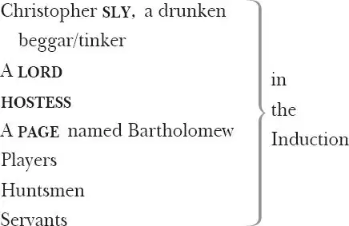
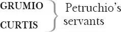

The Taming of the Shrew

BAPTISTA Minola, a gentleman of Padua
KATE (Katherina), his elder daughter, the 'shrew'
BIANCA , his younger daughter
PETRUCHIO , a gentleman from Verona, suitor to Kate
LUCENTIO , in love with Bianca (disguises himself as 'Cambio', a Latin tutor)
VINCENTIO , Lucentio's father, a merchant from Pisa
GREMIO , an aged suitor to Bianca
HORTENSIO , friend of Petruchio and suitor to Bianca (disguises himself as 'Litio', a music tutor)
TRANIO , Lucentio's servant
BIONDELLO , a boy in the service of Lucentio

A PEDANT
A WIDOW
A TAILOR
A HABERDASHER
Servants and Messengers (Petruchio has servants named NATHANIEL , JOSEPH , NICHOLAS , PHILIP and PETER )
Induction
Scene 1 1 / running scene 1
Enter Beggar and Hostess, [the beggar is called ] Christopher Sly
SLY I'll pheeze 2 you, in faith.
HOSTESS A pair of stocks 3 , you rogue!
SLY You're a baggage 4 , the Slys are no rogues. Look in the chronicles 5 , we came in with Richard Conqueror 6 : therefore paucas pallabris 7 , let the world slide. Sessa! 8
HOSTESS You will not pay for the glasses you have burst 9 ?
SLY No, not a denier 10 . Go by, Saint Jeronimy 11 , go to thy cold bed 12 and warm thee.
HOSTESS I know my remedy: I must go fetch the thirdborough 13 .
[Exit ]
SLY Third, or fourth, or fifth borough, I'll answer him by law 14 . I'll not budge an inch, boy. Let him come, and kindly 15 .
[He ] falls asleep
Wind horns. Enter a Lord from hunting, with his train
LORD Huntsman, I charge 16 thee tender well 17 my hounds.
Brach 18 Merriman, the poor cur 19 is embossed 20 ,
And couple 21 Clowder with the deep-mouthed brach 22 .
Saw'st thou not, boy, how Silver made it good 23
At the hedge-corner, in the coldest fault 24 ?
I would not lose the dog for twenty pound.
FIRST HUNTSMAN Why, Belman is as good as he, my lord.
He cried upon it at the merest 25 loss 26 ,
And twice today picked out the dullest scent.
Trust me, I take him for the better dog.
LORD Thou art a fool. If Echo were as fleet 27 ,
I would esteem him worth a dozen such.
But sup 28 them well and look unto 29 them all:
Tomorrow I intend to hunt again.
FIRST HUNTSMAN I will, my lord.
LORD What's here? One dead, or drunk? See, doth he breathe?
Sees Sly
SECOND HUNTSMAN He breathes, my lord. Were he not warmed with ale,
This were a bed but cold 30 to sleep so soundly.
LORD O monstrous beast, how like a swine he lies!
Grim death, how foul and loathsome is thine image 31 .
Sirs, I will practise on 32 this drunken man.
What think you, if he were conveyed to bed,
Wrapped in sweet 33 clothes, rings put upon his fingers,
A most delicious banquet 34 by his bed,
And brave 35 attendants near him when he wakes,
Would not the beggar then forget himself 36 ?
FIRST HUNTSMAN Believe me, lord, I think he cannot choose 37 .
SECOND HUNTSMAN It would seem strange 38 unto him when he waked.
LORD Even as a flatt'ring dream or worthless fancy 39 .
Then take him up and manage well the jest:
Carry him gently to my fairest chamber
And hang it round 40 with all my wanton 41 pictures:
Balm 42 his foul 43 head in warm distillèd 44 waters
And burn sweet 45 wood to make the lodging sweet:
Procure me music ready when he wakes,
To make a dulcet 46 and a heavenly sound.
And if he chance to speak, be ready straight 47
And with a low 48 submissive reverence 49
Say 'What is it your honour will command?'
Let one attend him with a silver basin
Full of rose-water and bestrewed with flowers,
Another bear the ewer 50 , the third a diaper 51 ,
And say 'Will't please your lordship cool your hands?'
Someone be ready with a costly suit
And ask him what apparel he will wear.
Another tell him of his hounds and horse,
And that his lady mourns at his disease 52 .
Persuade him that he hath been lunatic,
And when he says he is 53 , say that he dreams,
For he is nothing but a mighty lord.
This do, and do it kindly 54 , gentle sirs.
It will be pastime passing 55 excellent,
If it be husbanded 56 with modesty 57 .
FIRST HUNTSMAN My lord, I warrant 58 you we will play our part,
As 59 he shall think by our true diligence
He is no less than what we say he is.
LORD Take him up gently and to bed with him,
Some carry out Sly
And each one to his office 60 when he wakes.
Sound trumpets
Sirrah 61 , go see what trumpet 'tis that sounds.
[Exit a Servingman ]
Belike 62 , some noble gentleman that means,
Travelling some journey, to repose him here.
Enter Servingman
How now? Who is it?
SERVINGMAN An't 63 please your honour, players
That offer service to your lordship.
Enter Players
LORD Bid them come near.— Now, fellows, you are welcome.
PLAYERS We thank your honour.
LORD Do you intend to stay with me tonight?
SECOND PLAYER So please 64 your lordship to accept our duty 65 .
LORD With all my heart. This fellow I remember,
Since once he played a farmer's eldest son.
'Twas where you wooed the gentlewoman so well:
I have forgot your name, but, sure, that part
Was aptly fitted 66 and naturally performed.
FIRST PLAYER I think 'twas Soto that your honour means.
LORD 'Tis very true, thou didst it excellent.
Well, you are come to me in happy 67 time,
The rather for 68 I have some sport in hand
Wherein your cunning 69 can assist me much.
There is a lord will hear you play tonight;
But I am doubtful 70 of your modesties 71 ,
Lest over-eyeing of 72 his odd behaviour —
For yet his honour never heard a play —
You break into some merry passion 73
And so offend him, for I tell you, sirs,
If you should smile he grows impatient 74 .
FIRST PLAYER Fear not, my lord, we can contain ourselves
Were he the veriest antic 75 in the world.
LORD Go, sirrah, take them to the buttery 76 ,
To a Servingman
And give them friendly welcome every one.
Let them want 77 nothing that my house affords 78 .
Exit one with the Players
Sirrah, go you to Barthol'mew my page,
And see him dressed in all suits 79 like a lady.
That done, conduct him to the drunkard's chamber,
And call him 'madam', do him obeisance 80 .
Tell him from me, as he will 81 win my love,
He bear 82 himself with honourable action 83 ,
Such as he hath observed in noble ladies
Unto their lords, by them accomplishèd 84 :
Such duty 85 to the drunkard let him do
With soft low tongue 86 and lowly 87 courtesy,
And say, 'What is't your honour will command,
Wherein your lady and your humble wife
May show her duty and make known her love?'
And then with kind embracements, tempting kisses,
And with declining head into his bosom 88 ,
Bid him shed tears, as being overjoyed
To see her noble lord restored to health,
Who for this seven years hath esteemèd him 89
No better than a poor and loathsome beggar:
And if the boy have not a woman's gift
To rain a shower of commanded tears 90 ,
An onion will do well for such a shift 91 ,
Which in a napkin 92 being close conveyed 93
Shall in despite 94 enforce a watery eye.
See this dispatched 95 with all the haste thou canst.
Anon 96 I'll give thee more instructions.
Exit a Servingman
I know the boy will well usurp the grace 97 ,
Voice, gait and action of a gentlewoman:
I long to hear him call the drunkard husband,
And how 98 my men will stay 99 themselves from laughter
When they do homage to this simple peasant.
I'll in 100 to counsel them. Haply 101 my presence
May well abate the over-merry spleen 102
Which otherwise would grow into extremes.
[Exeunt ]
Scene 2 / running scene 1 continues 103
Enter aloft the drunkard [Sly ] with Attendants, some with apparel, basin and ewer, and other appurtenances, and Lord
SLY For God's sake, a pot of small 104 ale.
FIRST SERVINGMAN Will't please your lordship drink a cup of sack 105 ?
SECOND SERVINGMAN Will't please your honour taste of these conserves 106 ?
THIRD SERVINGMAN What raiment 107 will your honour wear today?
SLY I am Christophero Sly, call not me 'honour' nor 'lordship'. I ne'er drank sack in my life: and if you give me any conserves, give me conserves of beef 108 : ne'er ask me what raiment I'll wear, for I have no more doublets 109 than backs, no more stockings than legs, nor no more shoes than feet — nay, sometime more feet than shoes, or such shoes as my toes look through the over-leather 110 .
LORD Heaven cease this idle humour 111 in your honour!
O, that a mighty man of such descent,
Of such possessions and so high esteem,
Should be infusèd with so foul a spirit 112 !
SLY What, would you make me mad? Am not I Christopher Sly, old Sly's son of Burtonheath 113 , by birth a pedlar, by education a cardmaker 114 , by transmutation 115 a bear-herd 116 , and now by present profession a tinker 117 ? Ask Marian Hacket, the fat ale-wife 118 of Wincot 119 , if she know me not: if she say I am not fourteen pence on the score 120 121 for sheer 122 ale, score me up for 123 the lying'st knave in Christendom. What, I am not bestraught 124 ! Here's—
THIRD SERVINGMAN O, this it is that makes your lady mourn!
SECOND SERVINGMAN O, this is it that makes your servants droop 125 !
LORD Hence comes it that your kindred shuns your house,
As 126 beaten hence by your strange lunacy.
O noble lord, bethink thee of thy birth,
Call home thy ancient 127 thoughts from banishment
And banish hence these abject lowly dreams 128 .
Look how thy servants do attend on thee,
Each in his office ready at thy beck.
Wilt thou have music? Hark! Apollo 129 plays,
Music
And twenty cagèd nightingales do sing.
Or wilt thou sleep? We'll have thee to a couch
Softer and sweeter than the lustful 130 bed
On purpose trimmed up 131 for Semiramis 132 .
Say thou wilt walk, we will bestrow 133 the ground.
Or wilt thou ride? Thy horses shall be trapped 134 ,
Their harness studded all with gold and pearl.
Dost thou love hawking 135 ? Thou hast hawks will soar
Above the morning lark. Or wilt thou hunt?
Thy hounds shall make the welkin 136 answer them
And fetch shrill echoes from the hollow earth.
FIRST SERVINGMAN Say thou wilt course 137 , thy greyhounds are as swift
As breathèd 138 stags, ay, fleeter than the roe 139 .
SECOND SERVINGMAN Dost thou love pictures? We will fetch thee straight
Adonis 140 painted by a running brook,
And Cytherea 141 all in sedges 142 hid,
Which seem to move and wanton 143 with her breath,
Even as the waving sedges play with wind.
LORD We'll show thee Io 144 as she was a maid 145 ,
And how she was beguilèd 146 and surprised 147 ,
As lively 148 painted as the deed was done.
THIRD SERVINGMAN Or Daphne 149 roaming through a thorny wood,
Scratching her legs that one shall swear she bleeds,
And at that sight shall sad Apollo weep,
So workmanly 150 the blood and tears are drawn.
LORD Thou art a lord, and nothing but a lord.
Thou hast a lady far more beautiful
Than any woman in this waning 151 age.
FIRST SERVINGMAN And till the tears that she hath shed for thee
Like envious 152 floods o'errun her lovely face,
She was the fairest creature in the world,
And yet 153 she is inferior to none.
SLY Am I a lord? And have I such a lady?
Or do I dream? Or have I dreamed till now?
I do not sleep: I see, I hear, I speak,
I smell sweet savours and I feel soft things.
Upon my life, I am a lord indeed
And not a tinker nor Christopher Sly.
Well, bring our lady hither to our sight,
And once again, a pot o'th'smallest ale.
SECOND SERVINGMAN Will't please your mightiness to wash your hands?
O, how we joy to see your wit 154 restored!
O, that once more you knew but 155 what you are!
These fifteen years you have been in a dream,
Or when you waked, so waked as if you slept.
SLY These fifteen years! By my fay 156 , a goodly nap.
But did I never speak of 157 all that time?
FIRST SERVINGMAN O, yes, my lord, but very idle words,
For though you lay here in this goodly chamber,
Yet would you say ye were beaten out of door,
And rail upon 158 the hostess of the house 159 ,
And say you would present her at the leet 160 ,
Because she brought stone jugs and no sealed quarts 161 :
Sometimes you would call out for Cicely Hacket.
SLY Ay, the woman's maid of the house 162 .
THIRD SERVINGMAN Why, sir, you know no house nor no such maid,
Nor no such men as you have reckoned up 163 ,
As Stephen Sly and old John Naps of Greece 164
And Peter Turph and Henry Pimpernell
And twenty more such names and men as these
Which never were nor no man ever saw.
SLY Now lord be thankèd for my good amends 165 !
ALL Amen.
Enter [the Page dressed as a ] lady, with Attendants
SLY I thank thee. Thou shalt not lose by it.
PAGE How fares my noble lord?
SLY Marry 166 , I fare 167 well, for here is cheer 168 enough. Where is my wife?
PAGE Here, noble lord. What is thy will with her?
SLY Are you my wife and will not call me husband?
My men should call me 'lord'. I am your Goodman 169
PAGE My husband and my lord, my lord and husband,
I am your wife in all obedience.
SLY I know it well.— What must I call her?
LORD Madam.
SLY Al'ce 170 madam, or Joan madam?
LORD 'Madam', and nothing else. So lords call ladies.
SLY Madam wife, they say that I have dreamed
And slept above some fifteen year or more.
PAGE Ay, and the time seems thirty unto me,
Being all this time abandoned 171 from your bed.
SLY 'Tis much. Servants, leave me and her alone.
[Exeunt Attendants ]
Madam, undress you and come now to bed.
PAGE Thrice-noble lord, let me entreat of you
To pardon me yet for a night or two,
Or, if not so, until the sun be set.
For your physicians have expressly charged,
In peril to incur your former malady 172 ,
That I should yet absent me from your bed:
I hope this reason stands for 173 my excuse.
SLY Ay, it stands 174 so that I may hardly 175 tarry so long. But I would be loath to fall into my dreams again. I will therefore tarry in despite 176 of the flesh and the blood.
Enter a Messenger
MESSENGER Your honour's players, hearing your amendment,
Are come to play a pleasant 177 comedy,
For so your doctors hold it very meet 178 ,
Seeing too much sadness hath congealed your blood,
And melancholy is the nurse of frenzy:
Therefore they thought it good you hear a play
And frame 179 your mind to mirth and merriment,
Which bars 180 a thousand harms and lengthens life.
SLY Marry, I will, let them play it. Is not a comonty a Christmas gambold 181 or a tumbling trick 182 ?
PAGE No, my good lord, it is more pleasing stuff 183 .
SLY What, household stuff?
PAGE It is a kind of history 184 .
SLY Well, we'll see't. Come, madam wife, sit by my side and let the world slip 185 , we shall ne'er be younger.
They sit
Flourish
Act 1
Scene 1 186 / running scene 2
Enter Lucentio 187 and his man Tranio
LUCENTIO Tranio, since for the great desire I had
To see fair Padua 188 , nursery 189 of arts,
I am arrived for 190 fruitful Lombardy 191 ,
The pleasant garden of great Italy,
And by my father's love and leave 192 am armed
With his good will and thy good company,
My trusty servant, well approved 193 in all,
Here let us breathe 194 and haply 195 institute 196
A course of learning and ingenious 197 studies.
Pisa, renownèd for grave 198 citizens,
Gave me my being and my father first 199 ,
A merchant of great traffic 200 through the world,
Vincentio come of 201 the Bentivolii 202 .
Vincentio's son, brought up in Florence,
It shall become to serve all hopes conceived,
To deck his fortune with his virtuous deeds 203 :
And therefore, Tranio, for the time I study,
Virtue and that part of philosophy
Will I apply that treats of 204 happiness
By virtue specially to be achieved.
Tell me thy mind, for I have Pisa left
And am to Padua come, as he that leaves
A shallow plash 205 to plunge him in the deep
And with satiety 206 seeks to quench his thirst.
TRANIO Mi perdonato 207 , gentle master mine.
I am in all affected 208 as yourself,
Glad that you thus continue your resolve
To suck the sweets of sweet philosophy.
Only, good master, while we do admire
This virtue and this moral discipline,
Let's be no stoics 209 nor no stocks 210 , I pray,
Or so devote to Aristotle 211 's checks 212
As 213 Ovid 214 be an outcast quite abjured 215 .
Balk 216 logic with acquaintance that you have
And practise rhetoric in your common 217 talk,
Music and poesy use to quicken 218 you;
The mathematics and the metaphysics,
Fall to 219 them as you find your stomach serves you 220 .
No profit grows where is no pleasure ta'en 221 :
In brief, sir, study what you most affect 222 .
LUCENTIO Gramercies 223 , Tranio, well dost thou advise.
If, Biondello, thou wert 224 come ashore,
We could at once put us in readiness,
And take a lodging fit to entertain
Such friends as time in Padua shall beget 225 .
But stay a while, what company is this?
TRANIO Master, some show to welcome us to town.
Enter Baptista with his two daughters, Katherina and Bianca 226 , Gremio a pantaloon 227 , Hortensio suitor to Bianca. Lucentio [and ] Tranio stand by
BAPTISTA Gentlemen, importune 228 me no farther,
For how I firmly am resolved you know:
That is, not to bestow 229 my youngest daughter
Before I have a husband for the elder.
If either of you both love Katherina,
Because I know you well and love you well,
Leave shall you have to court her at your pleasure.
GREMIO To cart her 230 rather. She's too rough 231 for me.
Aside?
There, there, Hortensio, will you 232 any wife?
KATE I pray you, sir, is it your will
To Baptista
To make a stale 233 of me amongst these mates 234 ?
HORTENSIO 'Mates', maid? How mean you that? No mates for you,
Unless you were of gentler, milder mould.
KATE I'faith, sir, you shall never need to fear:
Iwis 235 it is not halfway to her heart 236 .
But if it were, doubt not her care 237 should be
To comb your noddle 238 with a three-legged stool
And paint 239 your face and use 240 you like a fool.
HORTENSIO From all such devils, good lord deliver us!
GREMIO And me too, good lord!
TRANIO Husht, master! Here's some good pastime toward 241 ;
Aside to Lucentio
That wench is stark mad or wonderful froward 242 .
LUCENTIO But in the other's silence do I see
Aside to Tranio
Maid's mild behaviour and sobriety.
Peace, Tranio!
TRANIO Well said, master. Mum 243 , and gaze your fill.
Aside to Lucentio
BAPTISTA Gentlemen, that I may soon make good
What I have said, Bianca, get you in,
And let it not displease thee, good Bianca,
For I will love thee ne'er the less, my girl.
KATE A pretty peat 244 ! It is best
Put finger in the eye, an she knew why 245 .
BIANCA Sister, content you 246 in my discontent.
Sir, to your pleasure 247 humbly I subscribe 248 :
My books and instruments shall be my company,
On them to look and practise by myself.
LUCENTIO Hark, Tranio, thou may'st hear Minerva 249 speak.
HORTENSIO Signior Baptista, will you be so strange 250 ?
Sorry am I that our good will effects 251
Bianca's grief.
GREMIO Why will you mew her up 252 ,
Signior Baptista, for 253 this fiend of hell,
And make her 254 bear the penance of her 255 tongue?
BAPTISTA Gentlemen, content ye, I am resolved.—
Go in, Bianca.—
[Exit Bianca ]
And for 256 I know she taketh most delight
In music, instruments and poetry,
Schoolmasters will I keep within my house
Fit to instruct her youth. If you, Hortensio,
Or Signior Gremio, you, know any such,
Prefer 257 them hither, for to cunning 258 men
I will be very kind, and liberal
To mine own children in good bringing up.
And so farewell.— Katherina, you may stay,
For I have more to commune 259 with Bianca.
Exit
KATE Why, and I trust I may go too, may I not? What, shall I be appointed hours 260 , as though, belike 261 , I knew not what to take and what to leave? Ha?
Exit
GREMIO You may go to the devil's dam 262 . Your gifts 263 are so good, here's none will hold you 264 .— Their love 265 is not so great, Hortensio, but we may blow our nails 266 together, and fast it fairly out 267 . Our cake's dough on both sides 268 . Farewell. Yet for the love I bear my sweet Bianca, if I can by any means light on 269 a fit man to teach her that wherein she delights, I will wish 270 him to her father.
HORTENSIO So will I, Signior Gremio. But a word, I pray. Though the nature of our quarrel yet never brooked parle 271 , know now, upon advice 272 , it toucheth 273 us both — that we may yet again have access to our fair mistress and be happy rivals in Bianca's love — to labour and effect 274 one thing specially.
GREMIO What's that, I pray?
HORTENSIO Marry, sir, to get a husband for her sister.
GREMIO A husband? A devil.
HORTENSIO I say a husband.
GREMIO I say a devil. Think'st thou, Hortensio, though her father be very rich, any man is so very a fool to be married to hell?
HORTENSIO Tush, Gremio, though it pass 275 your patience and mine to endure her loud alarums 276 , why, man, there be good fellows in the world, an 277 a man could light on them, would take her with all faults, and money enough.
GREMIO I cannot tell, but I had as lief 278 take her dowry with this condition: to be whipped at the high cross 279 every morning.
HORTENSIO Faith, as you say, there's small choice in rotten apples. But come, since this bar in law 280 makes us friends, it shall be so far forth friendly maintained 281 till by helping Baptista's eldest daughter to a husband we set his youngest free for a husband, and then have to't afresh 282 . Sweet Bianca! Happy man be his dole! 283 He that runs fastest gets the ring 284 . How say you, Signior Gremio?
GREMIO I am agreed, and would I had given him the best horse in Padua to begin his wooing that would thoroughly woo her, wed her and bed her and rid the house of her! Come on.
Exeunt both [Gremio and Hortensio ]. Tranio and Lucentio remain
TRANIO I pray, sir, tell me, is it possible
That love should of a sudden take such hold?
LUCENTIO O Tranio, till I found it to be true,
I never thought it possible or likely.
But see, while idly I stood looking on,
I found the effect of love in idleness 285 ,
And now in plainness do confess to thee,
That art to me as secret 286 and as dear
As Anna to the Queen of Carthage 287 was,
Tranio, I burn, I pine, I perish, Tranio,
If I achieve not this young modest girl.
Counsel me, Tranio, for I know thou canst.
Assist me, Tranio, for I know thou wilt.
TRANIO Master, it is no time to chide you now.
Affection is not rated 288 from the heart:
If love have touched you, naught remains but so,
Redime 289 te captum quam queas minimo .
LUCENTIO Gramercies, lad. Go forward 290 . This 291 contents:
The rest will comfort, for thy counsel's sound.
TRANIO Master, you looked so longly 292 on the maid,
Perhaps you marked not 293 what's the pith 294 of all.
LUCENTIO O, yes, I saw sweet beauty in her face,
Such as the daughter of Agenor 295 had,
That made great Jove to humble him 296 to her hand.
When with his knees he kissed 297 the Cretan strand 298 .
TRANIO Saw you no more? Marked you not how her sister
Began to scold and raise up such a storm
That mortal ears might hardly endure the din?
LUCENTIO Tranio, I saw her coral lips to move
And with her breath she did perfume the air.
Sacred and sweet was all I saw in her.
TRANIO Nay, then, 'tis time to stir him from his trance.—
Aside
I pray, awake, sir. If you love the maid,
Bend 299 thoughts and wits to achieve her. Thus it stands:
Her elder sister is so curst 300 and shrewd 301
That till the father rid his hands of her,
Master, your love must live a maid 302 at home,
And therefore has he closely 303 mewed her up,
Because she will not be annoyed 304 with suitors.
LUCENTIO Ah, Tranio, what a cruel father's he!
But art thou not advised 305 he took some care
To get her cunning schoolmasters to instruct her?
TRANIO Ay, marry, am I, sir, and now 'tis plotted.
LUCENTIO I have it, Tranio.
TRANIO Master, for my hand 306 ,
Both our inventions meet 307 and jump 308 in one.
LUCENTIO Tell me thine first.
TRANIO You will be schoolmaster
And undertake the teaching of the maid:
That's your device 309 .
LUCENTIO It is: may it be done?
TRANIO Not possible, for who shall bear 310 your part,
And be in Padua here Vincentio's son,
Keep house 311 and ply his book 312 , welcome his friends,
Visit his countrymen and banquet them?
LUCENTIO Basta 313 , content thee, for I have it full 314 .
We have not yet been seen in any house,
Nor can we be distinguished by our faces
For man or master. Then it follows thus:
Thou shalt be master, Tranio, in my stead,
Keep house and port 315 and servants as I should.
I will some other be, some Florentine,
Some Neapolitan, or meaner 316 man of Pisa.
'Tis hatched and shall be so. Tranio, at once
Uncase 317 thee: take my coloured 318 hat and cloak.
They exchange clothes
When Biondello comes, he waits on thee,
But I will charm 319 him first to keep his tongue.
TRANIO So had you need.
In brief, sir, sith 320 it your pleasure is,
And I am tied 321 to be obedient —
For so your father charged 322 me at our parting,
'Be serviceable to my son', quoth he,
Although I think 'twas in another sense —
I am content to be Lucentio,
Because so well I love Lucentio.
LUCENTIO Tranio, be so, because Lucentio loves.
And let me be a slave, t'achieve that maid
Whose sudden sight 323 hath thralled 324 my wounded 325 eye.
Enter Biondello
Here comes the rogue. Sirrah, where have you been?
BIONDELLO Where have I been? Nay, how now? Where are you? Master, has my fellow Tranio stolen your clothes? Or you stolen his? Or both? Pray, what's the news?
LUCENTIO Sirrah, come hither. 'Tis no time to jest,
And therefore frame 326 your manners to the time.
Your fellow Tranio here, to save my life,
Puts my apparel and my count'nance 327 on,
And I for my escape have put on his,
For in a quarrel since I came ashore
I killed a man, and fear I was descried 328 .
Wait you on him, I charge you, as becomes 329 ,
While I make way from hence to save my life.
You understand me?
BIONDELLO I, sir? Ne'er a whit.
LUCENTIO And not a jot of Tranio in your mouth.
Tranio is changed into Lucentio.
BIONDELLO The better for him. Would I were so too!
TRANIO So could I, faith, boy, to have the next wish after,
That Lucentio indeed had Baptista's youngest daughter.
But, sirrah, not for my sake, but your master's, I advise
You use your manners discreetly 330 in all kind of companies:
When I am alone, why, then I am Tranio,
But in all places else your master Lucentio.
LUCENTIO Tranio, let's go. One thing more rests 331 that thyself execute 332 : to make 333 one among these wooers. If thou ask me why, sufficeth 334 my reasons are both good and weighty.
Exeunt
The Presenters above 335 speaks
FIRST SERVINGMAN My lord, you nod. You do not mind 336 the play.
SLY Yes, by Saint Anne, do I. A good matter 337 , surely.
Comes there any more of it?
PAGE My lord, 'tis but begun.
SLY 'Tis a very excellent piece of work, madam lady.
Would 338 'twere done!
They sit and mark 339
Scene 2 / running scene 2 continues
Enter Petruchio and his man Grumio 340
PETRUCHIO Verona 341 , for a while I take my leave,
To see my friends in Padua; but of all 342
My best belovèd and approvèd friend,
Hortensio, and I trow 343 this is his house.
Here, sirrah Grumio, knock 344 , I say.
GRUMIO Knock, sir? Whom should I knock? Is there any man has rebused 345 your worship?
PETRUCHIO Villain 346 , I say, knock me 347 here soundly.
GRUMIO Knock you here, sir? Why, sir, what am I, sir, that I should knock you here, sir?
PETRUCHIO Villain, I say, knock me at this gate 348
And rap me well, or I'll knock your knave's pate 349 .
GRUMIO My master is grown quarrelsome. I should knock you first,
And then I know after who comes by the worst 350 .
PETRUCHIO Will it not be?
Faith, sirrah, an you'll not knock, I'll ring 351 it.
I'll try how you can sol-fa 352 and sing it 353 .
He wrings him by the ears
GRUMIO Help, mistress 354 , help! My master is mad.
PETRUCHIO Now, knock when I bid you, sirrah villain.
Enter Hortensio
HORTENSIO How now? What's the matter? My old friend Grumio and my good friend Petruchio? How do you all 355 at Verona?
PETRUCHIO Signior Hortensio, come you to part the fray?
Con 356 tutto il cuore, ben trovato, may I say.
HORTENSIO Alla 357 nostra casa ben venuto, molto honorata signor mio Petruchio. Rise, Grumio, rise. We will compound 358 this quarrel.
GRUMIO Nay, 'tis no matter, sir, what he 'leges 359 in Latin 360 . If this be not a lawful cause for me to leave his service, look you, sir: he bid me knock him and rap him soundly, sir. Well, was it fit for a servant to use 361 his master so, being perhaps, for aught 362 I see, two and thirty, a pip 363 out 364 ?
Whom would to God I had well knocked at first,
Then had not Grumio come by the worst.
PETRUCHIO A senseless villain! Good Hortensio,
I bade the rascal knock upon your gate
And could not get him for my heart 365 to do it.
GRUMIO Knock at the gate? O heavens! Spake you not these words plain, 'Sirrah, knock me here, rap me here, knock me well, and knock me soundly'? And come you now with, 'knocking at the gate'?
PETRUCHIO Sirrah, be gone, or talk not, I advise you.
HORTENSIO Petruchio, patience. I am Grumio's pledge 366 .
Why, this' 367 a heavy chance 368 'twixt him and you,
Your ancient 369 , trusty, pleasant servant Grumio.
And tell me now, sweet friend, what happy 370 gale
Blows you to Padua here from old Verona?
PETRUCHIO Such wind as scatters young men through the world,
To seek their fortunes further than at home
Where small experience grows. But in a few 371 ,
Signior Hortensio, thus it stands with me:
Antonio, my father, is deceased,
And I have thrust myself into this maze,
Happily to wive 372 and thrive as best I may.
Crowns 373 in my purse I have and goods at home,
And so am come abroad to see the world.
HORTENSIO Petruchio, shall I then come roundly 374 to thee
And wish 375 thee to a shrewd ill-favoured 376 wife?
Thou'ldst 377 thank me but a little for my counsel.
And yet I'll promise thee she shall be rich,
And very rich. But thou'rt too much my friend,
And I'll not wish thee to her.
PETRUCHIO Signior Hortensio, 'twixt such friends as we
Few words suffice: and therefore, if thou know
One rich enough to be Petruchio's wife —
As wealth is burden 378 of my wooing dance —
Be she as foul as was Florentius' love 379 ,
As old as Sibyl 380 and as curst and shrewd
As Socrates' Xanthippe 381 , or a worse,
She moves me not 382 , or not removes, at least,
Affection's edge in me 383 , were she as rough
As are the swelling Adriatic seas.
I come to wive it wealthily in Padua,
If wealthily, then happily in Padua.
GRUMIO Nay, look you, sir, he tells you flatly what his mind 384 is. Why, give him gold enough and marry him to a puppet or an aglet-baby 385 ; or an old trot 386 with ne'er a tooth in her head, though she have as many diseases as two and fifty horses. Why, nothing comes amiss, so money comes withal 387 .
HORTENSIO Petruchio, since we are stepped thus far in 388 ,
I will continue that I broached 389 in jest.
I can, Petruchio, help thee to a wife
With wealth enough and young and beauteous,
Brought up as best becomes a gentlewoman.
Her only fault, and that is faults enough,
Is that she is intolerable 390 curst
And shrewd and froward, so beyond all measure
That, were my state 391 far worser than it is,
I would not wed her for a mine of gold.
PETRUCHIO Hortensio, peace! Thou know'st not gold's effect.
Tell me her father's name and 'tis enough,
For I will board 392 her, though she chide as loud
As thunder when the clouds in autumn crack 393 .
HORTENSIO Her father is Baptista Minola,
An affable and courteous gentleman.
Her name is Katherina Minola,
Renowned in Padua for her scolding tongue.
PETRUCHIO I know her father, though I know not her,
And he knew my deceasèd father well.
I will not sleep, Hortensio, till I see her,
And therefore let me be thus bold with you
To give you over 394 at this first encounter,
Unless you will accompany me thither.
GRUMIO I pray you, sir, let him go while the humour 395 lasts. O' 396 my word, an 397 she knew him as well as I do, she would think scolding would do little good upon him. She may perhaps call him half a score 398 knaves or so. Why, that's nothing; an he begin once, he'll rail 399 in his rope-tricks 400 . I'll tell you what, sir, an she stand 401 him but a little, he will throw a figure 402 in her face and so disfigure her with it that she shall have no more eyes to see withal 403 than a cat. You know him not, sir.
HORTENSIO Tarry, Petruchio, I must go with thee,
For in Baptista's keep 404 my treasure 405 is:
He hath the jewel of my life in hold 406 ,
His youngest daughter, beautiful Bianca,
And her withholds from me and other more 407 ,
Suitors to her and rivals in my love,
Supposing it a thing impossible,
For those defects 408 I have before rehearsed 409 ,
That ever Katherina will be wooed:
Therefore this order 410 hath Baptista ta'en,
That none shall have access unto Bianca
Till Katherine the curst have got a husband.
GRUMIO Katherine the curst!
A title for a maid of all titles the worst.
HORTENSIO Now shall my friend Petruchio do me grace 411 ,
And offer me disguised in sober robes
To old Baptista as a schoolmaster
Well seen 412 in music, to instruct Bianca,
That so I may by this device at least
Have leave and leisure to make love to 413 her
And unsuspected court her by herself.
Enter Gremio and Lucentio disguised
GRUMIO Here's no knavery! 414 See, to beguile 415 the old folks, how the young folks lay their heads together! Master, master, look about you. Who goes there, ha?
HORTENSIO Peace, Grumio, it is the rival of my love.
Petruchio, stand by a while.
They stand aside
GRUMIO A proper stripling 416 and an amorous!
Aside
GREMIO O, very well, I have perused the note 417 .
To Lucentio
Hark you, sir, I'll have them very fairly 418 419 bound —
All books of love, see that at any hand —
And see you read no other lectures 420 to her.
You understand me. Over and beside
Signior Baptista's liberality 421 ,
I'll mend it with a largesse 422 . Take your paper too,
Gives Lucentio the note
And let me have them 423 very well perfumed,
For she is sweeter than perfume itself
To whom they go to. What will you read to her?
LUCENTIO Whate'er I read to her, I'll plead for you
As for my patron, stand you so assured,
As firmly as yourself were still in place 424 —
Yea, and perhaps with more successful words
Than you, unless you were a scholar, sir.
GREMIO O, this learning, what a thing it is!
GRUMIO O, this woodcock 425 , what an ass it is!
Aside
PETRUCHIO Peace, sirrah!
HORTENSIO Grumio, mum.— God save you, Signior Gremio.
GREMIO And you are well met 426 , Signior Hortensio.
Trow you 427 whither I am going? To Baptista Minola.
I promised to inquire carefully
About a schoolmaster for the fair Bianca,
And by good fortune I have lighted well
On this young man, for learning and behaviour
Fit for her turn 428 , well read in poetry
And other books, good ones, I warrant ye.
HORTENSIO 'Tis well. And I have met a gentleman
Hath promised me to help me to 429 another,
A fine musician to instruct our mistress.
So shall I no whit be behind in duty
To fair Bianca, so beloved of me.
GREMIO Beloved of me, and that my deeds shall prove.
GRUMIO And that his bags 430 shall prove.
Aside
HORTENSIO Gremio, 'tis now no time to vent 431 our love.
Listen to me, and if you speak me fair 432 ,
I'll tell you news indifferent good for either 433 .
Here is a gentleman whom by chance I met,
Upon agreement from us to his liking 434 ,
Will undertake to woo curst Katherine,
Yea, and to marry her, if her dowry please.
GREMIO So said, so done, is well 435 .
Hortensio, have you told him all her faults?
PETRUCHIO I know she is an irksome brawling scold:
If that be all, masters, I hear no harm.
GREMIO No, say'st me so, friend? What countryman? 436
PETRUCHIO Born in Verona, old Antonio's son.
My father dead, my fortune lives for me,
And I do hope good days and long to see.
GREMIO O sir, such a life with such a wife were strange.
But if you have a stomach 437 , to't 438 a' God's name.
You shall have me assisting you in all.
But will you woo this wild-cat?
PETRUCHIO Will I live? 439
GRUMIO Will he woo her? Ay, or I'll hang her.
Aside?
PETRUCHIO Why came I hither but to that intent?
Think you a little din can daunt mine ears?
Have I not in my time heard lions roar?
Have I not heard the sea, puffed up with winds,
Rage like an angry boar chafèd 440 with sweat?
Have I not heard great ordnance 441 in the field,
And heaven's artillery thunder in the skies?
Have I not in a pitchèd 442 battle heard
Loud 'larums 443 , neighing steeds, and trumpets' clang?
And do you tell me of a woman's tongue,
That gives not half so great a blow to hear
As will a chestnut in a farmer's fire 444 ?
Tush, tush! Fear 445 boys with bugs 446 .
GRUMIO For he fears none.
GREMIO Hortensio, hark:
This gentleman is happily arrived,
My mind presumes, for his own good and yours.
HORTENSIO I promised we would be contributors
And bear his charge 447 of wooing whatsoe'er.
GREMIO And so we will, provided that he win her.
GRUMIO I would I were as sure of a good dinner.
Enter Tranio brave 448 [disguised as Lucentio ] and Biondello
TRANIO Gentlemen, God save you. If I may be bold,
Tell me, I beseech you, which is the readiest 449 way
To the house of Signior Baptista Minola?
BIONDELLO He that has the two fair daughters, is't he you mean?
TRANIO Even he, Biondello.
GREMIO Hark you, sir, you mean not her to— 450
TRANIO Perhaps, him and her, sir. What have you to do? 451
PETRUCHIO Not her that chides, sir, at any hand, I pray.
TRANIO I love no chiders 452 , sir. Biondello, let's away.
LUCENTIO Well begun 453 , Tranio.
Aside
HORTENSIO Sir, a word ere 454 you go:
Are you a suitor to the maid you talk of, yea or no?
TRANIO And if I be, sir, is it any offence?
GREMIO No, if without more words you will get you hence.
TRANIO Why, sir, I pray, are not the streets as free
For me as for you?
GREMIO But so is not she.
TRANIO For what reason, I beseech you?
GREMIO For this reason, if you'll know,
That she's the choice 455 love of Signior Gremio.
HORTENSIO That she's the chosen of Signior Hortensio.
TRANIO Softly, my masters. If you be gentlemen,
Do me this right: hear me with patience.
Baptista is a noble gentleman,
To whom my father is not all 456 unknown,
And were his daughter fairer than she is,
She may more suitors have, and me for one.
Fair Leda's daughter 457 had a thousand wooers,
Then well one more may fair Bianca have,
And so she shall. Lucentio shall make one,
Though 458 Paris 459 came in hope to speed alone 460 .
GREMIO What, this gentleman will out-talk us all.
LUCENTIO Sir, give him head 461 . I know he'll prove a jade 462 .
PETRUCHIO Hortensio, to what end are all these words?
HORTENSIO Sir, let me be so bold as ask you,
Did you yet ever see Baptista's daughter?
TRANIO No, sir, but hear I do that he hath two:
The one as famous for a scolding tongue
As is the other for beauteous modesty.
PETRUCHIO Sir, sir, the first's for me, let her go by 463 .
GREMIO Yea, leave that labour to great Hercules,
And let it be 464 more than Alcides' twelve 465 .
PETRUCHIO Sir, understand you this of me, in sooth 466 :
The youngest daughter whom you hearken for 467 ,
Her father keeps from all access of suitors,
And will not promise her to any man
Until the elder sister first be wed.
The younger then is free, and not before.
TRANIO If it be so, sir, that you are the man
Must stead 468 us all and me amongst the rest,
And if you break the ice and do this feat,
Achieve the elder, set the younger free
For our access, whose hap 469 shall be to have her
Will not so graceless be to be ingrate 470 .
HORTENSIO Sir, you say well, and well you do conceive 471 .
And since you do profess to be a suitor,
You must, as we do, gratify 472 this gentleman,
To whom we all rest 473 generally beholding 474 .
TRANIO Sir, I shall not be slack, in sign whereof,
Please ye we may contrive 475 this afternoon
And quaff carouses 476 to our mistress' health,
And do as adversaries 477 do in law,
Strive 478 mightily, but eat and drink as friends.
GRUMIO and BIONDELLO O excellent motion 479 ! Fellows, let's be gone.
HORTENSIO The motion's good indeed and be it so,
Petruchio, I shall be your ben venuto 480 .
Exeunt
Act 2
Scene 1 / running scene 3
Enter Katherina and Bianca
Bianca's hands tied
BIANCA Good sister, wrong me not, nor wrong yourself,
To make a bondmaid 481 and a slave of me.
That I disdain. But for these other goods 482 ,
Unbind 483 my hands, I'll pull them off myself,
Yea, all my raiment 484 , to my petticoat,
Or what you will command me will I do,
So well I know my duty to my elders.
KATE Of all thy suitors here I charge thee tell
Whom thou lov'st best: see thou dissemble 485 not.
BIANCA Believe me, sister, of all the men alive
I never yet beheld that special 486 face
Which I could fancy more than any other.
KATE Minion 487 , thou liest. Is't not Hortensio?
BIANCA If you affect 488 him, sister, here I swear
I'll plead for you myself, but you shall have him.
KATE O, then belike you fancy riches more:
You will have Gremio to keep you fair 489 .
BIANCA Is it for him you do envy 490 me so?
Nay then you jest, and now I well perceive
You have but jested with me all this while.
I prithee sister Kate, untie my hands.
KATE If that be jest, then all the rest was so.
Strikes her
Enter Baptista
BAPTISTA Why, how now, dame 491 ? Whence grows this insolence?—
Bianca, stand aside. Poor girl, she weeps.
Go ply thy needle 492 , meddle not 493 with her.—
For shame, thou hilding 494 of a devilish spirit,
Why dost thou wrong her that did ne'er wrong thee?
When did she cross 495 thee with a bitter word?
KATE Her silence flouts 496 me, and I'll be revenged.
Flies after Bianca
BAPTISTA What, in my sight? Bianca, get thee in.
Exit [Bianca ]
KATE What, will you not suffer 497 me? Nay, now I see
She is your treasure, she must have a husband,
I must dance barefoot on her wedding day 498 ,
And for your love to her lead apes in hell 499 .
Talk not to me. I will go sit and weep
Till I can find occasion of 500 revenge.
[Exit ]
BAPTISTA Was ever gentleman thus grieved as I?
But who comes here?
Enter Gremio, Lucentio in the habit 501 of a mean 502 man, Petruchio with [Hortensio as a musician, and ] Tranio, with his boy [Biondello ] bearing a lute and books
GREMIO Good morrow, neighbour Baptista.
BAPTISTA Good morrow, neighbour Gremio.
God save you, gentlemen!
PETRUCHIO And you, good sir. Pray, have you not a daughter
Called Katherina, fair and virtuous?
BAPTISTA I have a daughter, sir, called Katherina.
GREMIO You are too blunt. Go to it orderly 503 .
PETRUCHIO You wrong me, Signior Gremio, give me leave 504 .—
I am a gentleman of Verona, sir,
To Baptista
That, hearing of her beauty and her wit 505 ,
Her affability and bashful modesty,
Her wondrous qualities and mild behaviour,
Am bold to show myself a forward 506 guest
Within your house, to make mine eye the witness
Of that report which I so oft have heard.
And for an entrance to my entertainment 507 ,
I do present you with a man of mine,
Presents Hortensio
Cunning in music and the mathematics,
To instruct her fully in those sciences 508 ,
Whereof I know she is not ignorant.
Accept of 509 him, or else you do me wrong.
His name is Litio 510 , born in Mantua 511 .
BAPTISTA You're welcome, sir, and he, for your good sake.
But for my daughter Katherine, this I know,
She is not for your turn 512 , the more my grief.
PETRUCHIO I see you do not mean to part with her,
Or else you like not of my company.
BAPTISTA Mistake me not, I speak but as I find.
Whence are you, sir? What may I call your name?
PETRUCHIO Petruchio is my name, Antonio's son,
A man well known throughout all Italy.
BAPTISTA I know him well. You are welcome for his sake.
GREMIO Saving 513 your tale, Petruchio, I pray,
Let us that are poor petitioners 514 speak too:
Baccare 515 ! You are marvellous forward.
PETRUCHIO O, pardon me, Signior Gremio, I would fain be doing 516 .
GREMIO I doubt it not, sir. But you will curse your wooing.— Neighbour, this is a gift very grateful 517 , I am sure of it. To express the like 518 kindness, myself, that have been more kindly 519 beholding to you than any, freely give unto you this young scholar, that hath been long studying at Rheims 520 , as cunning in Greek, Latin, and other languages, as the other in music and mathematics. His name is Cambio 521 . Pray, accept his service.
To Baptista
Presents Lucentio
BAPTISTA A thousand thanks, Signior Gremio.
Welcome, good Cambio.—
But, gentle sir, methinks you walk like a stranger 522 .
To Tranio
May I be so bold to know the cause of your coming?
TRANIO Pardon me, sir, the boldness is mine own,
That, being a stranger in this city here,
Do make myself a suitor to your daughter,
Unto Bianca, fair and virtuous.
Nor is your firm resolve unknown to me,
In the preferment 523 of the eldest sister.
This liberty is all that I request,
That, upon knowledge 524 of my parentage,
I may have welcome 'mongst the rest that woo,
And free access and favour as the rest.
And toward the education of your daughters
I here bestow a simple instrument,
Presents lute and books
And this small packet of Greek and Latin books:
If you accept them, then their worth is great.
BAPTISTA Lucentio is your name? 525 Of whence, I pray?
TRANIO Of Pisa, sir, son to Vincentio.
BAPTISTA A mighty 526 man of Pisa. By report
I know him well. You are very welcome, sir.—
To Hortensio and Lucentio
Take you the lute, and you the set of books,
You shall go see your pupils presently 527 .—
Holla 528 , within!
Enter a Servant
Sirrah, lead these gentlemen
To my daughters, and tell them both
These are their tutors: bid them use them well.
[Exit Servant, with Lucentio and Hortensio, Biondello following ]
We will go walk a little in the orchard 529 ,
And then to dinner 530 . You are passing 531 welcome,
And so I pray you all to think yourselves.
PETRUCHIO Signior Baptista, my business asketh haste 532 ,
And every day I cannot come to woo.
You knew my father well, and in him me,
Left solely heir to all his lands and goods,
Which I have bettered rather than decreased.
Then tell me, if I get your daughter's love,
What dowry shall I have with her to wife?
BAPTISTA After my death the one half of my lands,
And in possession 533 twenty thousand crowns.
PETRUCHIO And for that dowry I'll assure her of
Her widowhood 534 , be it that she survive me,
In all my lands and leases 535 whatsoever.
Let specialties 536 be therefore drawn between us,
That covenants 537 may be kept on either hand.
BAPTISTA Ay, when the special 538 thing is well obtained,
That is, her love, for that is all in all.
PETRUCHIO Why, that is nothing, for I tell you, father 539 ,
I am as peremptory as she proud-minded.
And where two raging fires meet together
They do consume the thing that feeds their fury.
Though little fire grows great with little wind,
Yet extreme gusts will blow out fire and all:
So I 540 to her and so she yields to me,
For I am rough and woo not like a babe.
BAPTISTA Well mayst thou woo, and happy be thy speed 541 !
But be thou armed for some unhappy words.
PETRUCHIO Ay, to the proof 542 , as mountains are for winds,
That shakes not, though they blow perpetually.
Enter Hortensio [disguised as Litio ], with his head broke 543
BAPTISTA How now, my friend? Why dost thou look so pale?
HORTENSIO For fear, I promise you, if I look pale.
BAPTISTA What, will my daughter prove a good musician?
HORTENSIO I think she'll sooner prove 544 a soldier.
Iron may hold with 545 her, but never lutes.
BAPTISTA Why, then thou canst not break her to 546 the lute?
HORTENSIO Why, no, for she hath broke the lute to me 547 .
I did but tell her she mistook her frets 548 ,
And bowed her hand to teach her fingering,
When, with a most impatient devilish spirit,
'Frets, call you these?' quoth she, 'I'll fume 549 with them.'
And with that word, she struck me on the head,
And through the instrument my pate 550 made way,
And there I stood amazèd 551 for a while,
As on a pillory 552 , looking through the lute,
While she did call me rascal fiddler 553
And twangling Jack 554 , with twenty such vile terms,
As had she studied 555 to misuse me so.
PETRUCHIO Now, by the world, it is a lusty 556 wench.
I love her ten times more than e'er I did.
O, how I long to have some chat with her!
BAPTISTA Well, go with me and be not so discomfited 557 .
To Hortensio
Proceed in practice 558 with my younger daughter,
She's apt to learn and thankful for good turns.
Signior Petruchio, will you go with us,
Or shall I send my daughter Kate to you?
PETRUCHIO I pray you do.
Exeunt all but Petruchio
I'll attend 559 her here,
And woo her with some spirit when she comes.
Say that she rail, why then I'll tell her plain
She sings as sweetly as a nightingale:
Say that she frown, I'll say she looks as clear 560
As morning roses newly washed with dew:
Say she be mute and will not speak a word,
Then I'll commend her volubility,
And say she uttereth piercing 561 eloquence:
If she do bid me pack 562 , I'll give her thanks,
As though she bid me stay by her a week:
If she deny to wed, I'll crave 563 the day
When I shall ask the banns 564 and when be married.
But here she comes, and now, Petruchio, speak.
Enter Katherina
Good morrow, Kate, for that's your name, I hear.
KATE Well have you heard, but something hard 565 of hearing:
They call me Katherine that do talk of me.
PETRUCHIO You lie, in faith, for you are called plain Kate,
And bonny Kate and sometimes Kate the curst,
But Kate, the prettiest Kate in Christendom,
Kate of Kate Hall, my super-dainty Kate,
For dainties are all Kates 566 , and therefore, Kate,
Take this of 567 me, Kate of my consolation,
Hearing thy mildness praised in every town,
Thy virtues spoke of, and thy beauty sounded 568 ,
Yet not so deeply as to thee belongs 569 ,
Myself am moved 570 to woo thee for my wife.
KATE Moved? In good time! 571 Let him that moved you hither
Remove you hence. I knew you at the first 572
You were a movable 573 .
PETRUCHIO Why, what's a movable?
KATE A joint stool 574 .
PETRUCHIO Thou hast hit it: come, sit on me 575 .
KATE Asses 576 are made to bear 577 , and so are you.
PETRUCHIO Women are made to bear, and so are you.
KATE No such jade as you, if me you mean.
PETRUCHIO Alas, good Kate, I will not burden 578 thee,
For knowing thee to be but young and light 579 —
KATE Too light 580 for such a swain 581 as you to catch,
And yet as heavy as my weight should be 582 .
PETRUCHIO Should be 583 ? Should — buzz 584 !
KATE Well ta'en 585 , and like a buzzard 586 .
PETRUCHIO O slow-winged turtle 587 , shall a buzzard 588 take thee?
KATE Ay, for a turtle, as he takes a buzzard.
PETRUCHIO Come, come, you wasp, i'faith, you are too angry.
KATE If I be waspish 589 , best beware my sting 590 .
PETRUCHIO My remedy is then to pluck it out.
KATE Ay, if the fool could find it where it lies.
PETRUCHIO Who knows not where a wasp does wear his sting? In his tail.
KATE In his tongue.
PETRUCHIO Whose tongue?
KATE Yours, if you talk of tails 591 , and so farewell.
PETRUCHIO What, with my tongue in your tail 592 ? Nay, come 593 again 594 .
Good Kate, I am a gentleman.
KATE That I'll try 595 .
She strikes him
PETRUCHIO I swear I'll cuff 596 you, if you strike again.
KATE So may you lose your arms 597 :
If you strike 598 me, you are no gentleman,
And if no gentleman, why then no arms.
PETRUCHIO A herald, Kate? O, put me in thy books 599 !
KATE What is your crest 600 , a coxcomb 601 ?
PETRUCHIO A combless 602 cock 603 , so 604 Kate will be my hen 605 .
KATE No cock of mine, you crow too like a craven 606 .
PETRUCHIO Nay, come, Kate, come, you must not look so sour.
KATE It is my fashion 607 , when I see a crab 608 .
PETRUCHIO Why, here's no crab, and therefore look not sour.
KATE There is, there is.
PETRUCHIO Then show it me.
KATE Had I a glass 609 , I would.
PETRUCHIO What, you mean my face?
KATE Well aimed of such a young one 610 .
PETRUCHIO Now, by Saint George, I am too young 611 for you.
KATE Yet you are withered.
PETRUCHIO 'Tis with cares 612 .
KATE I care not.
PETRUCHIO Nay, hear you, Kate. In sooth you scape 613 not so.
KATE I chafe 614 you, if I tarry. Let me go.
PETRUCHIO No, not a whit. I find you passing gentle.
'Twas told me you were rough 615 and coy 616 and sullen,
And now I find report a very liar,
For thou are pleasant 617 , gamesome 618 , passing courteous,
But slow 619 in speech, yet sweet as spring-time flowers.
Thou canst not frown, thou canst not look askance 620 ,
Nor bite the lip, as angry wenches will,
Nor hast thou pleasure to be cross 621 in talk.
But thou with mildness entertain'st 622 thy wooers,
With gentle conference 623 , soft and affable.
Why does the world report that Kate doth limp?
Kicks her?
O sland'rous world! Kate like the hazel twig
Is straight and slender and as brown in hue
As hazelnuts and sweeter than the kernels.
O, let me see thee walk: thou dost not halt 624 .
KATE Go, fool, and whom thou keep'st command 625 .
PETRUCHIO Did ever Dian 626 so become 627 a grove
As Kate this chamber with her princely gait 628 ?
O, be thou Dian, and let her be Kate,
And then let Kate be chaste and Dian sportful 629 !
KATE Where did you study 630 all this goodly 631 speech?
PETRUCHIO It is extempore 632 , from my mother-wit 633 .
KATE A witty mother, witless else her son 634 .
PETRUCHIO Am I not wise?
KATE Yes, keep you warm 635 .
PETRUCHIO Marry, so I mean 636 , sweet Katherine, in thy bed.
And therefore, setting all this chat aside,
Thus in plain terms: you 637 r father hath consented
That you shall be my wife; your dowry 'greed on,
And, will you, nill you, I will marry you.
Now, Kate, I am a husband for your turn 638 ,
For by this light, whereby I see thy beauty,
Thy beauty that doth make me like thee well,
Thou must be married to no man but me,
Enter Baptista, Gremio, Tranio [disguised as Lucentio ]
For I am he am born to tame you, Kate,
And bring you from a wild Kate 639 to a Kate
Conformable 640 as other household Kates.
Here comes your father. Never make denial 641 ,
I must and will have Katherine to my wife.
BAPTISTA Now, Signior Petruchio, how speed you 642 with my daughter?
PETRUCHIO How but well, sir? How but well?
It were impossible I should speed amiss 643 .
BAPTISTA Why, how now, daughter Katherine? In your dumps? 644
KATE Call you me 'daughter'? Now, I promise you
You have showed a tender fatherly regard,
To wish me wed to one half-lunatic,
A mad-cap ruffian and a swearing Jack
That thinks with oaths to face the matter out 645 .
PETRUCHIO Father, 'tis thus: yourself and all the world
That talked of her, have talked amiss of her:
If she be curst, it is for policy 646 ,
For she's not froward, but modest as the dove,
She is not hot, but temperate 647 as the morn,
For patience she will prove a second Grissel 648 ,
And Roman Lucrece 649 for her chastity.
And to conclude, we have 'greed 650 so well together
That upon Sunday is the wedding day.
KATE I'll see thee hanged on Sunday first.
GREMIO Hark, Petruchio, she says she'll see thee hanged first.
TRANIO Is this your speeding 651 ? Nay then, goodnight our part 652 !
PETRUCHIO Be patient, gentlemen, I choose her for myself.
If she and I be pleased, what's that to you?
'Tis bargained 'twixt us twain 653 , being alone,
That she shall still be curst in company.
I tell you, 'tis incredible to believe
How much she loves me: O, the kindest Kate!
She hung about my neck, and kiss on kiss
She vied 654 so fast, protesting 655 oath on oath,
That in a twink 656 she won me to her love.
O, you are novices! 'Tis a world to see 657
How tame, when men and women are alone,
A meacock 658 wretch can make the curstest shrew.
Give me thy hand, Kate. I will unto Venice
To buy apparel 'gainst 659 the wedding day;
Provide the feast, father, and bid 660 the guests.
I will be sure my Katherine shall be fine 661 .
BAPTISTA I know not what to say, but give me your hands.
God send you joy, Petruchio! 'Tis a match.
GREMIO and TRANIO Amen, say we. We will be witnesses 662 .
PETRUCHIO Father, and wife, and gentlemen, adieu.
I will to Venice. Sunday comes apace 663 .
We will have rings and things and fine array,
And kiss me, Kate, we will be married o'Sunday.
Exeunt Petruchio and Katherine [separately ]
GREMIO Was ever match clapped up 664 so suddenly?
BAPTISTA Faith, gentlemen, now I play a merchant's part,
And venture madly on a desperate mart 665 .
TRANIO 'Twas a commodity lay fretting by you 666 :
'Twill bring you gain, or perish on the seas.
BAPTISTA The gain I seek is quiet 667 in the match.
GREMIO No doubt but he hath got a quiet catch 668 .
But now, Baptista, to your younger daughter.
Now is the day we long have lookèd for.
I am your neighbour, and was suitor first.
TRANIO And I am one that love Bianca more
Than words can witness, or your thoughts can guess.
GREMIO Youngling, thou canst not love so dear as I.
TRANIO Greybeard, thy love doth freeze 669 .
GREMIO But thine doth fry 670 .
Skipper 671 , stand back, 'tis age that nourisheth 672 .
TRANIO But youth in ladies' eyes that flourisheth.
BAPTISTA Content you, gentlemen, I will compound 673 this strife.
'Tis deeds 674 must win the prize, and he of both 675
That can assure my daughter greatest dower 676
Shall have my Bianca's love.
Say, Signior Gremio, what can you assure her?
GREMIO First, as you know, my house within the city
Is richly furnishèd with plate 677 and gold,
Basins and ewers to lave 678 her dainty hands:
My hangings 679 all of Tyrian 680 tapestry:
In ivory coffers 681 I have stuffed my crowns:
In cypress 682 chests my arras counterpoints 683 ,
Costly apparel, tents 684 , and canopies,
Fine linen, Turkey 685 cushions bossed 686 with pearl,
Valance of Venice gold in needlework 687 :
Pewter and brass and all things that belongs
To house or housekeeping. Then, at my farm
I have a hundred milch-kine 688 to the pail 689 ,
Sixscore fat oxen standing in my stalls,
And all things answerable to this portion 690 .
Myself am struck 691 in years, I must confess,
And if I die tomorrow, this is hers,
If whilst I live she will be only mine.
TRANIO That 'only' came well in 692 . Sir, list 693 to me:
I am my father's heir and only son.
If I may have your daughter to my wife,
I'll leave her houses three or four as good,
Within rich Pisa walls 694 , as any one
Old Signior Gremio has in Padua,
Besides two thousand ducats by the year
Of fruitful land, all which shall be her jointure 695 .
What, have I pinched 696 you, Signior Gremio?
GREMIO Two thousand ducats by the year of land 697 ?
My land amounts not to so much in all.—
Aside
That she shall have, besides an argosy 698
That now is lying in Marseillis' road 699 .
What, have I choked you with an argosy?
To Tranio
TRANIO Gremio, 'tis known my father hath no less
Than three great argosies, besides two galliases 700 ,
And twelve tight 701 galleys. These I will assure her,
And twice as much, whate'er thou offer'st next.
GREMIO Nay, I have offered all, I have no more,
And she can have no more than all I have.
If you like me, she shall have me and mine.
To Baptista
TRANIO Why then the maid is mine from all the world,
By your firm promise. Gremio is out-vied 702 .
BAPTISTA I must confess your offer is the best,
And let 703 your father make her the assurance 704 ,
She is your own, else 705 , you must pardon me.
If you should die before him, where's her dower?
TRANIO That's but a cavil 706 . He is old, I young.
GREMIO And may not young men die, as well as old?
BAPTISTA Well, gentlemen,
I am thus resolved: on Sunday next, you know
My daughter Katherine is to be married.
Now on the Sunday following, shall Bianca
Be bride to you, if you make this assurance.
If not, to Signior Gremio.
And so, I take my leave, and thank you both.
Exit
GREMIO Adieu, good neighbour.— Now I fear thee not.
Sirrah young gamester 707 , your father were 708 a fool
To give thee all, and in his waning age
Set foot under thy table 709 . Tut, a toy 710 !
An old Italian fox is not so kind, my boy.
Exit
TRANIO A vengeance on your crafty withered hide!
Yet I have faced it with a card of ten 711 .
'Tis in my head 712 to do my master good:
I see no reason but supposed Lucentio
Must get 713 a father, called 'supposed Vincentio',
And that's a wonder. Fathers commonly
Do get their children, but in this case of wooing,
A child shall get a sire 714 , if I fail not of my cunning.
Exit
Act 3
Scene 1 / running scene 3 continues
Enter Lucentio [disguised as Cambio ], Hortensio [disguised as Litio ] and Bianca
LUCENTIO Fiddler, forbear. You grow too forward, sir 715 .
Have you so soon forgot the entertainment 716
Her sister Katherine welcomed you withal 717 ?
HORTENSIO But, wrangling pedant, this is
The patroness of heavenly harmony:
Then give me leave to have prerogative 718 ,
And when in music we have spent an hour,
Your lecture 719 shall have leisure for as much.
LUCENTIO Preposterous 720 ass, that never read so far
To know the cause why music was ordained 721 !
Was it not to refresh the mind of man
After his studies or his usual pain 722 ?
Then give me leave to read philosophy,
And while I pause, serve in 723 your harmony.
HORTENSIO Sirrah, I will not bear these braves 724 of thine.
BIANCA Why, gentlemen, you do me double wrong
To strive for that which resteth in my choice 725 .
I am no breeching scholar in the schools 726 ,
I'll not be tied to hours nor 'pointed 727 times,
But learn my lessons as I please myself.
And, to cut off all strife, here sit we down.
Take you your instrument, play you the whiles 728 .
To Hortensio
His lecture will be done ere you have tuned.
HORTENSIO You'll leave his lecture when I am in tune?
LUCENTIO That will be never. Tune your instrument.
BIANCA Where left we last?
LUCENTIO Here, madam:
'Hic ibat Simois. Hic est Sigeia tellus.
Reads
Hic steterat Priami regia celsa senis 729 .'
BIANCA Conster 730 them.
LUCENTIO 'Hic ibat ', as I told you before, 'Simois ', I am Lucentio, 'hic est ', son unto Vincentio of Pisa, 'Sigeia tellus ', disguised thus to get your love, 'Hic steterat ', and that Lucentio that comes a-wooing, 'Priami ', is my man Tranio, 'regia ', bearing my port 731 , 'celsa senis ', that we might beguile the old pantaloon 732 .
HORTENSIO Madam, my instrument's in tune.
BIANCA Let's hear. O fie 733 ! The treble jars 734 .
He plays
LUCENTIO Spit in the hole, man, and tune again 735 .
BIANCA Now let me see if I can conster it: 'Hic ibat Simois ', I know you not, 'hic est Sigeia tellus ', I trust you not, 'Hic steterat Priami ', take heed he hear us not, 'regia ', presume not, 'celsa senis ', despair not.
HORTENSIO Madam, 'tis now in tune.
He plays again
LUCENTIO All but the bass.
HORTENSIO The bass is right: 'tis the base knave that jars 736 .
How fiery and forward our pedant 737 is.
Aside
Now, for my life, the knave doth court my love.
Pedascule 738 , I'll watch you better yet.
BIANCA In time I may believe, yet I mistrust.
To Lucentio
LUCENTIO Mistrust it not, for, sure, Aeacides
Was Ajax, called so from his grandfather 739 .
BIANCA I must believe my master 740 , else, I promise you,
I should be arguing still upon that doubt 741 .
But let it rest.— Now, Litio, to you:
Good master, take it not unkindly, pray,
That I have been thus pleasant 742 with you both.
HORTENSIO You may go walk, and give me leave 743 a while.
To Lucentio
My lessons make no music in three parts 744 .
LUCENTIO Are you so formal 745 , sir? Well, I must wait —
And watch withal 746 , for, but 747 I be deceived,
Aside
Our fine musician groweth amorous.
He stands aside
HORTENSIO Madam, before you touch the instrument,
To learn the order 748 of my fingering,
I must begin with rudiments of art,
To teach you gamut 749 in a briefer sort 750 ,
More pleasant, pithy and effectual,
Than hath been taught by any of my trade.
And there it is in writing, fairly drawn 751 .
Gives Bianca a paper
BIANCA Why, I am past my gamut long ago.
HORTENSIO Yet read the gamut of Hortensio.
BIANCA 'Gamut I am, the ground of all accord 752 ,
Reads
A re , to plead Hortensio's passion.
B mi , Bianca, take him for thy lord,
C fa ut , that loves with all affection.
D sol re , one clef, two notes have I 753 ,
E la mi , show pity, or I die.'
Call you this gamut? Tut, I like it not.
Old 754 fashions please me best. I am not so nice 755
To change true 756 rules for old inventions.
Enter a Messenger
MESSENGER Mistress, your father prays you leave your books
And help to dress your sister's chamber up.
You know tomorrow is the wedding day.
BIANCA Farewell, sweet masters both, I must be gone.
[Exeunt Bianca and Messenger ]
LUCENTIO Faith, mistress, then I have no cause to stay.
[Exit ]
HORTENSIO But I have cause to pry into 757 this pedant.
Methinks he looks as though he were in love.
Yet if thy thoughts, Bianca, be so humble
To cast thy wand'ring eyes on every stale 758 ,
Seize thee that list 759 . If once I find thee ranging 760 ,
Hortensio will be quit with 761 thee by changing.
Exit
Scene 2 / running scene 4
Enter Baptista, Gremio, Tranio, Katherina, Bianca, [Lucentio ] and others, Attendants
BAPTISTA Signior Lucentio, this is the 'pointed day.
To Tranio
That Katherine and Petruchio should be married,
And yet we hear not of our son-in-law.
What will be said? What mockery will it be,
To want 762 the bridegroom when the priest attends
To speak the ceremonial rites of marriage?
What says Lucentio to this shame of ours?
KATE No shame but mine: I must forsooth 763 be forced
To give my hand opposed against my heart
Unto a mad-brain rudesby 764 full of spleen 765 ,
Who wooed in haste and means to wed at leisure 766 .
I told you, I, he was a frantic 767 fool,
Hiding his bitter jests in blunt behaviour.
And to be noted for 768 a merry man,
He'll woo a thousand, 'point the day of marriage,
Make feasts, invite friends, and proclaim the banns,
Yet never means to wed where he hath wooed.
Now must the world point at poor Katherine,
And say, 'Lo 769 , there is mad Petruchio's wife,
If it would please him come and marry her.'
TRANIO Patience, good Katherine, and Baptista too.
Upon my life, Petruchio means but well,
Whatever fortune stays him from his word 770 .
Though he be blunt, I know him passing wise,
Though he be merry, yet withal he's honest.
KATE Would Katherine had never seen him though!
Exit weeping [followed by Bianca and others ]
BAPTISTA Go, girl. I cannot blame thee now to weep,
For such an injury would vex a very saint,
Much more a shrew of thy impatient humour 771 .
Enter Biondello
BIONDELLO Master, master, news! Old 772 news, and such news as you never heard of!
BAPTISTA Is it new and old too? How may that be?
BIONDELLO Why, is it not news to 773 hear of Petruchio's coming?
BAPTISTA Is he come?
BIONDELLO Why, no, sir.
BAPTISTA What then?
BIONDELLO He is coming.
BAPTISTA When will he be here?
BIONDELLO When he stands where I am and sees you there.
TRANIO But say, what to thine old news?
BIONDELLO Why, Petruchio is coming in a new hat and an old jerkin 774 : a pair of old breeches thrice turned 775 : a pair of boots that have been candle-cases 776 , one buckled, another laced, an old rusty sword ta'en out of the town armoury, with a broken hilt, and chapeless 777 : with two broken points 778 : his horse hipped 779 , with an old mothy saddle and stirrups of no kindred 780 : besides, possessed with the glanders 781 and like to mose in the chine 782 , troubled with the lampass 783 , infected with the fashions 784 , full of windgalls 785 , sped with spavins 786 , rayed 787 with yellows 788 , past cure of the fives 789 , stark 790 spoiled with the staggers 791 , begnawn 792 with the bots 793 , swayed in the back 794 and shoulder-shotten 795 , near-legged before 796 and with a half-checked bit 797 and a head-stall 798 of sheep's leather 799 which, being restrained 800 to keep him from stumbling, hath been often burst and now repaired with knots, one girth 801 six times pieced 802 , and a woman's crupper 803 of velure 804 , which hath two letters for her name fairly set down in studs 805 , and here and there pieced with packthread 806 .
BAPTISTA Who comes with him?
BIONDELLO O, sir, his lackey 807 , for all the world caparisoned 808 like the horse: with a linen stock 809 on one leg and a kersey 810 boot-hose 811 on the other, gartered with a red and blue list 812 ; an old hat and the humour of forty fancies 813 pricked in't for a feather 814 — a monster, a very monster in apparel, and not like a Christian footboy 815 or a gentleman's lackey.
TRANIO 'Tis some odd humour pricks 816 him to this fashion.
Yet oftentimes he goes but mean-apparelled 817 .
BAPTISTA I am glad he's come, howsoe'er he comes.
BIONDELLO Why, sir, he comes not.
BAPTISTA Didst thou not say he comes?
BIONDELLO Who? That Petruchio came?
BAPTISTA Ay, that Petruchio came.
BIONDELLO No, sir, I say his horse comes, with him on his back.
BAPTISTA Why, that's all one.
BIONDELLO Nay, by Saint Jamy 818 ,
I hold 819 you a penny,
A horse and a man
Is more than one,
And yet not many.
Enter Petruchio and Grumio
PETRUCHIO Come, where be these gallants 820 ? Who's at home?
BAPTISTA You are welcome, sir.
PETRUCHIO And yet I come not well 821 .
BAPTISTA And yet you halt 822 not.
TRANIO Not so well apparelled as I wish you were.
PETRUCHIO Were it better, I should rush in thus.
But where is Kate? Where is my lovely bride?
How does my father? Gentles 823 , methinks you frown.
And wherefore 824 gaze this goodly 825 company,
As if they saw some wondrous monument 826 ,
Some comet 827 or unusual prodigy 828 ?
BAPTISTA Why, sir, you know this is your wedding day.
First were we sad, fearing you would not come,
Now sadder that you come so unprovided 829 .
Fie, doff 830 this habit 831 , shame to your estate 832 ,
An eyesore to our solemn 833 festival!
TRANIO And tell us what occasion of import 834
Hath all so long detained you from your wife,
And sent you hither so unlike yourself?
PETRUCHIO Tedious it were to tell, and harsh to hear:
Sufficeth I am come to keep my word,
Though in some part enforcèd to digress,
Which at more leisure I will so excuse
As you shall well be satisfied withal.
But where is Kate? I stay too long from her.
The morning wears 835 , 'tis time we were at church.
TRANIO See not your bride in these unreverent 836 robes.
Go to my chamber, put on clothes of mine.
PETRUCHIO Not I, believe me. Thus I'll visit her.
BAPTISTA But thus, I trust, you will not marry her.
PETRUCHIO Good sooth 837 , even thus: therefore ha' 838 done with words.
To me she's married, not unto my clothes.
Could I repair what she will wear 839 in me,
As I can change these poor accoutrements 840 ,
'Twere well for Kate and better for myself.
But what a fool am I to chat with you,
When I should bid good morrow to my bride,
And seal the title with a lovely 841 kiss!
Exeunt [Petruchio and Grumio ]
TRANIO He hath some meaning in his mad attire.
We will persuade him, be it possible,
To put on better ere he go to church.
BAPTISTA I'll after him, and see the event 842 of this.
Exeunt [Baptista, Gremio and Attendants ]
TRANIO But, sir, love concerneth us to add
To Lucentio
Her father's liking 843 , which to bring to pass 844 ,
As before I imparted to your worship,
I am to get a man — whate'er he be,
It skills 845 not much, we'll fit 846 him to our turn —
And he shall be Vincentio of Pisa,
And make assurance here in Padua
Of greater sums than I have promisèd.
So shall you quietly enjoy your hope,
And marry sweet Bianca with consent.
LUCENTIO Were it not that my fellow schoolmaster
Doth watch Bianca's steps 847 so narrowly 848 ,
'Twere good, methinks, to steal our marriage 849 ,
Which once performed, let all the world say no,
I'll keep mine own, despite of all the world.
TRANIO That by degrees we mean to look into,
And watch our vantage 850 in this business.
We'll overreach 851 the greybeard, Gremio,
The narrow-prying 852 father, Minola,
The quaint 853 musician, amorous Litio,
All for my master's sake, Lucentio.
Enter Gremio
Signior Gremio, came you from the church?
GREMIO As willingly as e'er I came from school.
TRANIO And is the bride and bridegroom coming home?
GREMIO A bridegroom, say you? 'Tis a groom 854 indeed,
A grumbling groom, and that the girl shall find.
TRANIO Curster 855 than she? Why, 'tis impossible.
GREMIO Why he's a devil, a devil, a very fiend.
TRANIO Why, she's a devil, a devil, the devil's dam.
GREMIO Tut, she's a lamb, a dove, a fool to 856 him.
I'll tell you, Sir 857 Lucentio, when the priest
Should ask if Katherine should be his wife,
'Ay, by gogs-wouns 858 ', quoth he, and swore so loud
That all amazed the priest let fall the book 859 ,
And as he stooped again to take it up,
This mad-brained bridegroom took 860 him such a cuff
That down fell priest and book and book and priest.
'Now take them 861 up,' quoth he, 'if any list 862 .'
TRANIO What said the wench when he rose again?
GREMIO Trembled and shook, for why 863 , he stamped and swore,
As if the vicar meant to cozen 864 him.
But after many 865 ceremonies done,
He calls for wine: 'A health!' quoth he, as if
He had been aboard, carousing to his mates
After a storm, quaffed off 866 the muscadel 867
And threw the sops 868 all in the sexton's face,
Having no other reason
But that his beard grew thin and hungerly 869
And seemed to ask him 870 sops as he was drinking.
This done, he took the bride about the neck
And kissed her lips with such a clamorous smack
That at the parting all the church did echo.
And I seeing this came thence for very shame,
And after me, I know, the rout 871 is coming.
Such a mad marriage never was before.
Hark, hark! I hear the minstrels 872 play.
Music plays
Enter Petruchio, Kate, Bianca, Hortensio [disguised as Litio ], Baptista, [Grumio and others ]
PETRUCHIO Gentlemen and friends, I thank you for your pains.
I know you think 873 to dine with me today,
And have prepared great store of wedding cheer 874 ,
But so it is, my haste doth call me hence,
And therefore here I mean to take my leave.
BAPTISTA Is't possible you will away tonight?
PETRUCHIO I must away today, before night come.
Make it no wonder 875 . If you knew my business,
You would entreat me rather go than stay.
And honest 876 company, I thank you all,
That have beheld me give away myself
To this most patient, sweet and virtuous wife.
Dine with my father, drink a health to me,
For I must hence, and farewell to you all.
TRANIO Let us entreat you stay till after dinner.
PETRUCHIO It may not be.
GREMIO Let me entreat you.
PETRUCHIO It cannot be.
KATE Let me entreat you.
PETRUCHIO I am content.
KATE Are you content to stay?
PETRUCHIO I am content you shall entreat me stay,
But yet not stay 877 , entreat me how you can.
KATE Now, if you love me, stay.
PETRUCHIO Grumio, my horse.
GRUMIO Ay, sir, they be ready, the oats have eaten the horses 878 .
KATE Nay, then,
Do what thou canst, I will not go today,
No, nor tomorrow, not till I please myself.
The door is open, sir, there lies your way,
You may be jogging whiles your boots are green 879 .
For me, I'll not be gone till I please myself.
'Tis like you'll prove a jolly 880 surly groom,
That take it on you at the first so roundly 881 .
PETRUCHIO O Kate, content thee. Prithee be not angry.
KATE I will be angry. What hast thou to do 882 ?—
Father, be quiet. He shall stay my leisure 883 .
GREMIO Ay, marry, sir, now it begins to work 884 .
KATE Gentlemen, forward to the bridal dinner.
I see a woman may be made a fool,
If she had not a spirit to resist.
PETRUCHIO They shall go forward, Kate, at thy command.—
Obey the bride, you that attend on her.
Go to the feast, revel and domineer 885 ,
Carouse full measure 886 to her maidenhead 887 ,
Be mad 888 and merry, or go hang yourselves.
But for my bonny Kate, she must with me.—
Nay, look not big 889 , nor stamp, nor stare, nor fret.
I will be master of what is mine own:
She is my goods, my chattels 890 , she is my house,
My household stuff 891 , my field, my barn,
My horse, my ox, my ass, my anything 892 ,
And here she stands, touch her whoever dare.
I'll bring mine action 893 on the proudest he 894
That stops my way in Padua.— Grumio,
Draw forth thy weapon, we are beset with thieves.
Rescue thy mistress, if thou be a man.
Fear not, sweet wench, they shall not touch thee, Kate.
I'll buckler 895 thee against a million.
Exeunt Petruchio, Katherina [and Grumio ]
BAPTISTA Nay, let them go, a couple of quiet ones.
GREMIO Went they not 896 quickly, I should die with laughing.
TRANIO Of all mad matches never was the like.
LUCENTIO Mistress, what's your opinion of your sister?
BIANCA That, being mad herself, she's madly mated 897 .
GREMIO I warrant him, Petruchio is Kated.
BAPTISTA Neighbours and friends, though bride and bridegroom wants
For to 898 supply the places at the table,
You know there wants no junkets 899 at the feast.
Lucentio, you shall supply the bridegroom 900 's place,
And let Bianca take her sister's room.
TRANIO Shall sweet Bianca practise how to bride it 901 ?
BAPTISTA She shall, Lucentio. Come, gentlemen, let's go.
Exeunt
Scene 3 902 / running scene 5
Enter Grumio
GRUMIO Fie, fie on all tired jades, on all mad masters, and all foul ways 903 ! Was ever man so beaten? Was ever man so rayed 904 ? Was ever man so weary? I am sent before to make a fire, and they are coming after to warm them. Now, were not I a little pot and soon hot 905 , my very lips might freeze to my teeth, my tongue to the roof of my mouth, my heart in my belly, ere I should come by a fire to thaw me. But I with blowing the fire shall warm myself, for, considering the weather, a taller 906 man than I will take cold. Holla, ho, Curtis!
Enter Curtis
CURTIS Who is that calls so coldly 907 ?
GRUMIO A piece of ice: if thou doubt it, thou mayst slide from my shoulder to my heel with no greater a run 908 but my head and my neck. A fire good Curtis.
CURTIS Is my master and his wife coming, Grumio?
GRUMIO O, ay, Curtis, ay, and therefore fire, fire, cast on no water 909 .
CURTIS Is she so hot 910 a shrew as she's reported?
GRUMIO She was, good Curtis, before this frost. But, thou know'st, winter tames man, woman and beast 911 , for it hath tamed my old master and my new mistress and myself, fellow Curtis.
CURTIS Away, you three-inch fool! I am no beast 912 .
GRUMIO Am I but three inches? Why, thy horn 913 is a foot, and so long am I at the least 914 . But wilt thou make a fire, or shall I complain on thee to our mistress, whose hand, she being now at hand, thou shalt soon feel, to thy cold comfort, for being slow in thy hot office 915 ?
CURTIS I prithee, good Grumio, tell me how goes the world?
GRUMIO A cold world, Curtis, in every office but thine, and therefore fire: do thy duty 916 , and have thy duty, for my master and mistress are almost frozen to death.
CURTIS There's fire ready, and therefore, good Grumio, the news.
GRUMIO Why, 'Jack, boy! Ho, boy!' and as much news 917 as wilt thou.
CURTIS Come, you are so full of cony-catching 918 !
GRUMIO Why, therefore fire, for I have caught extreme cold. Where's the cook? Is supper ready, the house trimmed 919 , rushes strewed 920 , cobwebs swept, the servingmen in their new fustian 921 , the white stockings, and every officer his wedding-garment on? Be the jacks 922 fair within, the jills 923 fair without, the carpets laid 924 , and everything in order?
CURTIS All ready, and therefore, I pray thee, news.
GRUMIO First know my horse is tired, my master and mistress fallen out.
CURTIS How?
GRUMIO Out of their saddles into the dirt, and thereby hangs a tale.
CURTIS Let's ha't 925 , good Grumio.
GRUMIO Lend thine ear.
CURTIS Here.
GRUMIO There.
Strikes him
CURTIS This 'tis to feel a tale, not to hear a tale.
GRUMIO And therefore 'tis called a sensible 926 tale, and this cuff was but to knock at your ear, and beseech listening. Now I begin: Imprimis 927 , we came down a foul hill, my master riding behind my mistress—
CURTIS Both of 928 one horse?
GRUMIO What's that to thee?
CURTIS Why, a horse.
GRUMIO Tell thou the tale. But hadst thou not crossed 929 me, thou shouldst have heard how her horse fell and she under her horse: thou shouldst have heard in how miry 930 a place, how she was bemoiled 931 , how he left her with the horse upon her, how he beat me because her horse stumbled, how she waded through the dirt to pluck him off me, how he swore, how she prayed that never prayed before, how I cried, how the horses ran away, how her bridle was burst 932 , how I lost my crupper, with many things of worthy memory 933 , which now shall die in oblivion and thou return unexperienced 934 to thy grave.
CURTIS By this reckoning he is more shrew than she.
GRUMIO Ay, and that thou and the proudest 935 of you all shall find when he comes home. But what 936 talk I of this? Call forth Nathaniel, Joseph, Nicholas, Philip, Walter, Sugarsop and the rest. Let their heads be slickly combed, their blue 937 coats brushed and their garters of an indifferent knit 938 . Let them curtsy 939 with their left legs 940 and not presume to touch a hair of my master's horsetail till they kiss their hands 941 . Are they all ready?
CURTIS They are.
GRUMIO Call them forth.
CURTIS Do you hear, ho? You must meet my master to countenance 942 my mistress.
GRUMIO Why, she hath a face of her own.
CURTIS Who knows not that?
GRUMIO Thou, it seems, that calls for company to countenance her.
CURTIS I call them forth to credit 943 her.
Enter four or five Servingmen
GRUMIO Why, she comes to borrow nothing of them.
NATHANIEL Welcome home, Grumio!
PHILIP How now, Grumio!
JOSEPH What, Grumio!
NICHOLAS Fellow Grumio!
NATHANIEL How now, old lad?
GRUMIO Welcome, you.— How now, you?— What, you?— Fellow, you.— And thus much for greeting. Now, my spruce 944 companions, is all ready, and all things neat 945 ?
Greets each
Servingman
NATHANIEL All things is ready. How near is our master?
GRUMIO E'en at hand, alighted by this 946 , and therefore be not— Cock's passion 947 , silence! I hear my master.
Enter Petruchio and Kate
PETRUCHIO Where be these knaves? What, no man at door
To hold my stirrup nor to take my horse?
Where is Nathaniel, Gregory, Philip?
ALL SERVINGMEN Here, here, sir, here, sir.
PETRUCHIO Here, sir, here, sir, here, sir, here, sir!
You logger-headed 948 and unpolished grooms!
What, no attendance? No regard? No duty?
Where is the foolish knave I sent before?
GRUMIO Here, sir, as foolish as I was before.
PETRUCHIO You peasant swain 949 . You whoreson 950 malt-horse drudge 951 .
Did I not bid thee meet me in the park 952 ,
And bring along these rascal knaves with thee?
GRUMIO Nathaniel's coat, sir, was not fully made 953 ,
And Gabriel's pumps were all unpinked 954 i'th'heel.
There was no link 955 to colour Peter's hat,
And Walter's dagger was not come from sheathing 956 .
There were none fine 957 but Adam, Rafe and Gregory,
The rest were ragged, old, and beggarly.
Yet, as they are, here are they come to meet you.
PETRUCHIO Go, rascals, go, and fetch my supper in.
Exeunt Servingmen
'Where is the life that late I led?
Sings
Where are those—' 958
Sit down, Kate, and welcome.— Soud 959 , soud, soud, soud!
They sit
Enter Servants with supper
Why, when, I say? Nay, good sweet Kate, be merry.—
Off with my boots, you rogues! You villains, when 960 ?
A Servant takes off his boot
'It was the friar of orders grey 961 ,
Sings
As he forth walkèd on his way 962 —'
Out 963 , you rogue! You pluck my foot awry 964 .
Take that, and mend 965 the plucking of the other.
Kicks him
Be merry, Kate.— Some water 966 , here. What, ho!
Enter one with water
Where's my spaniel Troilus 967 ? Sirrah, get you hence,
And bid my cousin Ferdinand 968 come hither.—
One, Kate, that you must kiss, and be acquainted with.—
Where are my slippers? Shall I have some water?
Come, Kate, and wash, and welcome heartily.—
Servant spills water
You whoreson villain, will you let it fall?
Strikes the Servant
KATE Patience, I pray you. 'Twas a fault unwilling.
PETRUCHIO A whoreson beetle-headed 969 , flap-eared 970 knave!—
Come, Kate, sit down, I know you have a stomach 971 .
Will you give thanks 972 , sweet Kate, or else shall I?
What's this? Mutton?
FIRST SERVANT Ay.
PETRUCHIO Who brought it?
PETER I.
PETRUCHIO 'Tis burnt, and so is all the meat.
What dogs are these? Where is the rascal cook?
How durst you, villains, bring it from the dresser 973
And serve it thus to me that love it not?
There, take it to you, trenchers 974 , cups, and all.
Throws the meat and dishes at them
You heedless joltheads 975 and unmannered 976 slaves!
What, do you grumble? I'll be with you straight 977 .
KATE I pray you, husband, be not so disquiet.
The meat was well 978 , if you were so contented.
PETRUCHIO I tell thee, Kate, 'twas burnt and dried away,
And I expressly am forbid to touch it,
For it engenders choler 979 , planteth anger,
And better 'twere that both of us did fast,
Since, of ourselves 980 , ourselves are choleric,
Than feed it with such over-roasted flesh.
Be patient, tomorrow't shall be mended,
And for this night we'll fast for company 981 .
Come, I will bring thee to thy bridal chamber.
Exeunt
Enter Servants severally
NATHANIEL Peter, didst ever see the like?
PETER He kills her in her own humour 982 .
GRUMIO Where is he?
Enter Curtis, a servant
CURTIS In her chamber, making a sermon of continency 983 to her,
And rails and swears and rates 984 that she, poor soul,
Knows not which way to stand, to look, to speak,
And sits as one new-risen 985 from a dream.
Away, away, for he is coming hither.
[Exeunt ]
Enter Petruchio
PETRUCHIO Thus have I politicly 986 begun my reign,
And 'tis my hope to end successfully.
My falcon 987 now is sharp 988 and passing empty,
And till she stoop 989 she must not be full-gorged 990 ,
For then she never looks upon 991 her lure 992 .
Another way I have to man 993 my haggard 994 ,
To make her come and know her keeper's call,
That is, to watch her 995 , as we watch these kites 996
That bate and beat 997 and will not be obedient.
She eat 998 no meat today, nor none shall eat.
Last night she slept not, nor tonight she shall not.
As with the meat, some undeservèd fault
I'll find about the making of the bed,
And here I'll fling the pillow, there the bolster,
This way the coverlet, another way the sheets.
Ay, and amid this hurly 999 I intend 1000
That all is done in reverend care of her.
And in conclusion she shall watch 1001 all night,
And if she chance to nod I'll rail and brawl
And with the clamour keep her still awake.
This is a way to kill a wife with kindness,
And thus I'll curb her mad and headstrong humour.
He that knows better how to tame a shrew,
Now let him speak. 'Tis charity to show 1002 .
Exit
Scene 4 1003 / running scene 6
Enter Tranio and Hortensio
TRANIO Is't possible, friend Litio, that Mistress Bianca
Doth fancy any other but Lucentio?
I tell you, sir, she bears me fair in hand 1004 .
HORTENSIO Sir, to satisfy 1005 you in what I have said,
Stand by and mark the manner of his teaching.
Enter Bianca [and Lucentio ]
LUCENTIO Now, mistress, profit you in what you read?
BIANCA What, master, read you? First resolve 1006 me that.
LUCENTIO I read that I profess 1007 , the Art to Love 1008 .
BIANCA And may you prove, sir, master of your art.
LUCENTIO While you, sweet dear, prove mistress of my heart.
Lucentio and Bianca talk aside
HORTENSIO Quick proceeders 1009 , marry! Now tell me, I pray,
You that durst swear that your mistress Bianca
Loved none in the world so well as Lucentio.
TRANIO O despiteful love, unconstant womankind!
I tell thee, Litio, this is wonderful 1010 .
HORTENSIO Mistake no more, I am not Litio,
Nor a musician, as I seem to be,
But one that scorn to live in this disguise,
For such a one 1011 as leaves a gentleman,
And makes a god of such a cullion 1012 ;
Know, sir, that I am called Hortensio.
TRANIO Signior Hortensio, I have often heard
Of your entire 1013 affection to Bianca,
And since mine eyes are witness of her lightness 1014 ,
I will with you, if you be so contented,
Forswear 1015 Bianca and her love forever.
HORTENSIO See how they kiss and court! Signior Lucentio,
Here is my hand, and here I firmly vow
Never to woo her more, but do forswear her,
As one unworthy all the former favours
That I have fondly 1016 flattered her withal.
TRANIO And here I take the like unfeignèd 1017 oath,
Never to marry with her though she would entreat.
Fie on her! See how beastly 1018 she doth court him!
HORTENSIO Would all the world but he had quite forsworn 1019 !
For me, that 1020 I may surely keep mine oath,
I will be married to a wealthy widow,
Ere three days pass, which hath as long loved me
As I have loved this proud disdainful haggard.
And so farewell, Signior Lucentio.
Kindness in women, not their beauteous looks,
Shall win my love. And so I take my leave,
In resolution 1021 as I swore before.
[Exit ]
TRANIO Mistress Bianca, bless you with such grace
As 'longeth 1022 to a lover's blessèd case!
Nay, I have ta'en you napping 1023 , gentle love,
And have forsworn you with Hortensio.
BIANCA Tranio, you jest. But have you both forsworn me?
TRANIO Mistress, we have.
LUCENTIO Then we are rid of Litio.
TRANIO I'faith, he'll have a lusty 1024 widow now,
That shall be wooed and wedded in a day.
BIANCA God give him joy!
TRANIO Ay, and he'll tame her.
BIANCA He says so, Tranio.
TRANIO Faith, he is gone unto the taming school.
BIANCA The taming school? What, is there such a place?
TRANIO Ay, mistress, and Petruchio is the master,
That teacheth tricks eleven and twenty long 1025 ,
To tame a shrew and charm 1026 her chatt'ring tongue.
Enter Biondello
BIONDELLO O master, master, I have watched so long
That I am dog-weary 1027 , but at last I spied
An ancient angel 1028 coming down the hill
Will serve the turn.
TRANIO What is he, Biondello?
BIONDELLO Master, a mercatante 1029 , or a pedant 1030 ,
I know not what, but formal in apparel,
In gait and countenance surely like a father.
LUCENTIO And what of him, Tranio?
TRANIO If he be credulous and trust my tale,
I'll make him glad to seem 1031 Vincentio,
And give assurance to Baptista Minola
As if he were the right Vincentio.
Take in your love, and then let me alone 1032 .
[Exeunt Lucentio and Bianca ]
Enter a Pedant
PEDANT God save you, sir!
TRANIO And you, sir! You are welcome.
Travel you far on, or are you at the furthest?
PEDANT Sir, at the furthest for a week or two,
But then up further, and as far as Rome,
And so to Tripoli, if God lend me life.
TRANIO What countryman 1033 , I pray?
PEDANT Of Mantua.
TRANIO Of Mantua, sir? Marry, God forbid!
And come to Padua, careless of your life?
PEDANT My life, sir? How, I pray? For that goes hard 1034 .
TRANIO 'Tis death for anyone in Mantua
To come to Padua. Know you not the cause?
Your ships are stayed 1035 at Venice, and the duke,
For 1036 private quarrel 'twixt your duke and him,
Hath published 1037 and proclaimed it openly.
'Tis marvel 1038 , but that you are but newly come 1039 ,
You might have heard it else proclaimed about.
PEDANT Alas, sir, it is worse for me than so 1040 ,
For I have bills for money by exchange 1041
From Florence and must here deliver them.
TRANIO Well, sir, to do you courtesy,
This will I do, and this I will advise you:
First tell me, have you ever been at Pisa?
PEDANT Ay, sir, in Pisa have I often been,
Pisa renownèd for grave citizens.
TRANIO Among them know you one Vincentio?
PEDANT I know him not, but I have heard of him,
A merchant of incomparable wealth.
TRANIO He is my father, sir, and sooth to say,
In count'nance somewhat doth resemble you.
BIONDELLO As much as an apple doth an oyster, and all one 1042 .
Aside
TRANIO To save your life in this extremity,
This favour will I do you for his sake,
And think it not the worst of all your fortunes
That you are like to Sir Vincentio.
His name and credit 1043 shall you undertake 1044 ,
And in my house you shall be friendly lodged.
Look that you take upon you as you should 1045 .
You understand me, sir. So shall you stay
Till you have done your business in the city.
If this be court'sy, sir, accept of it.
PEDANT O, sir, I do, and will repute 1046 you ever
The patron of my life and liberty.
TRANIO Then go with me to make the matter good 1047 .
This, by the way, I let you understand.
My father is here looked for 1048 every day,
To pass assurance of a dower in marriage
'Twixt me and one Baptista's daughter here.
In all these circumstances I'll instruct you.
Go with me to clothe you as becomes 1049 you.
Exeunt
Act 4
Scene 1 1050 / running scene 7
Enter Katherina and Grumio
GRUMIO No, no, forsooth, I dare not for my life.
KATE The more my wrong 1051 , the more his spite appears.
What, did he marry me to famish me?
Beggars that come unto my father's door
Upon entreaty have a present 1052 alms,
If not, elsewhere they meet with charity.
But I, who never knew how to entreat,
Nor never needed that I should entreat,
Am starved for meat 1053 , giddy for lack of sleep,
With oaths kept waking and with brawling fed.
And that which spites 1054 me more than all these wants,
He does it under name of perfect love,
As who 1055 should say, if I should sleep or eat,
'Twere deadly sickness or else present death.
I prithee go and get me some repast,
I care not what, so 1056 it be wholesome food.
GRUMIO What say you to a neat's 1057 foot?
KATE 'Tis passing good, I prithee let me have it.
GRUMIO I fear it is too choleric 1058 a meat.
How say you to a fat tripe finely broiled 1059 ?
KATE I like it well, good Grumio, fetch it me.
GRUMIO I cannot tell 1060 , I fear 'tis choleric.
What say you to a piece of beef and mustard?
KATE A dish that I do love to feed upon.
GRUMIO Ay, but the mustard is too hot a little.
KATE Why then, the beef, and let the mustard rest.
GRUMIO Nay then, I will not. You shall have the mustard,
Or else you get no beef of Grumio.
KATE Then both, or one, or anything thou wilt.
GRUMIO Why then, the mustard without the beef.
KATE Go, get thee gone, thou false deluding slave
Beats him
That feed'st me with the very 1061 name of meat.
Sorrow on thee and all the pack of you
That triumph thus upon my misery.
Go, get thee gone, I say.
Enter Petruchio and Hortensio with meat
PETRUCHIO How fares my Kate? What, sweeting 1062 , all amort 1063 ?
HORTENSIO Mistress, what cheer 1064 ?
KATE Faith, as cold 1065 as can be.
PETRUCHIO Pluck up thy spirits, look cheerfully upon me.
Here love, thou see'st how diligent I am
To dress thy meat myself and bring it thee.
I am sure, sweet Kate, this kindness merits thanks.
What, not a word? Nay then thou lov'st it not,
And all my pains is sorted to no proof 1066 .
Here, take away this dish.
KATE I pray you let it stand 1067 .
PETRUCHIO The poorest service is repaid with thanks,
And so shall mine, before you touch the meat.
KATE I thank you, sir.
HORTENSIO Signior Petruchio, fie, you are to blame 1068 .
Come, mistress Kate, I'll bear you company.
PETRUCHIO Eat it up all, Hortensio, if thou lovest me.
Aside
Much good do it unto thy gentle heart!—
Hortensio takes plate
Kate, eat apace 1069 . And now, my honey love,
and does not let
Will we return unto thy father's house
Kate eat
And revel it as bravely 1070 as the best,
With silken coats and caps and golden rings,
With ruffs 1071 and cuffs 1072 and farthingales 1073 and things,
With scarfs and fans and double change of bravery,
With amber bracelets, beads and all this knavery 1074 .
What, hast thou dined? The tailor stays thy leisure,
To deck thy body with his ruffling treasure 1075 .
Enter Tailor [with a gown ]
Come, tailor, let us see these ornaments.
Enter Haberdasher [with a hat ]
Lay forth the gown.— What news with you, sir?
HABERDASHER Here is the cap your worship did bespeak 1076 .
PETRUCHIO Why, this was moulded on a porringer 1077 ,
A velvet dish. Fie, fie, 'tis lewd 1078 and filthy 1079 .
Why, 'tis a cockle 1080 or a walnut-shell,
A knack, a toy, a trick 1081 , a baby's cap.
Away with it! Come, let me have a bigger.
KATE I'll have no bigger. This doth fit the time 1082 ,
And gentlewomen wear such caps as these.
PETRUCHIO When you are gentle 1083 , you shall have one too,
And not till then.
HORTENSIO That will not be in haste.
Aside
KATE Why, sir, I trust I may have leave to speak,
And speak I will. I am no child, no babe.
Your betters have endured me 1084 say my mind,
And if you cannot, best you stop your ears.
My tongue will tell the anger of my heart,
Or else my heart concealing it will break,
And rather than it shall, I will be free
Even to the uttermost, as I please, in words.
PETRUCHIO Why, thou say'st true. It is a paltry cap,
A custard-coffin 1085 , a bauble, a silken pie.
I love thee well in that thou lik'st it not.
KATE Love me or love me not, I like the cap,
And it I will have, or I will have none.
[Exit Haberdasher ]
PETRUCHIO Thy gown? Why, ay. Come, tailor, let us see't.
O mercy, God! What masquing stuff 1086 is here?
What's this? A sleeve? 'Tis like a demi-cannon 1087 .
What, up and down 1088 , carved like an apple tart 1089 ?
Here's snip and nip and cut and slish and slash,
Like to a censer 1090 in a barber's shop.
Why, what o'devil's name, tailor, call'st thou this?
HORTENSIO I see she's like to have neither cap nor gown.
Aside
TAILOR You bid me make it orderly and well,
According to the fashion and the time.
PETRUCHIO Marry, and did 1091 . But if you be remembered,
I did not bid you mar 1092 it to the time.
Go, hop me over every kennel home 1093 ,
For you shall hop without my custom, sir:
I'll none of it. Hence, make your best of it 1094 .
KATE I never saw a better-fashioned gown,
More quaint 1095 , more pleasing, nor more commendable.
Belike 1096 you mean to make a puppet 1097 of me.
PETRUCHIO Why, true, he means to make a puppet of thee.
TAILOR She says your worship means to make a puppet of her.
PETRUCHIO O monstrous arrogance! Thou liest, thou thread, thou thimble,
Thou yard 1098 , three-quarters, half-yard, quarter, nail 1099 !
Thou flea, thou nit, thou winter-cricket thou!
Braved 1100 in mine own house with a skein of thread?
Away, thou rag, thou quantity 1101 , thou remnant,
Or I shall so be-mete 1102 thee with thy yard
As thou shalt think on prating 1103 whilst thou liv'st!
I tell thee, I, that thou hast marred her gown.
TAILOR Your worship is deceived. The gown is made
Just as my master had direction.
Grumio gave order how it should be done.
GRUMIO I gave him no order, I gave him the stuff 1104 .
TAILOR But how did you desire it should be made?
GRUMIO Marry, sir, with needle and thread.
TAILOR But did you not request to have it cut?
GRUMIO Thou hast faced 1105 many things.
TAILOR I have.
GRUMIO Face not me. Thou hast braved 1106 many men, brave not me; I will neither be faced nor braved. I say unto thee, I bid thy master cut out the gown, but I did not bid him cut it to pieces. Ergo 1107 , thou liest.
TAILOR Why, here is the note of the fashion to testify.
Shows bill
PETRUCHIO Read it.
GRUMIO The note lies in's throat 1108 , if he say I said so.
TAILOR 'Imprimis , a loose-bodied gown 1109 .'
Reads
GRUMIO Master, if ever I said loose-bodied gown, sew me in the skirts of it, and beat me to death with a bottom 1110 of brown thread: I said a gown.
PETRUCHIO Proceed.
TAILOR 'With a small compassed 1111 cape.'
Reads
GRUMIO I confess the cape.
TAILOR 'With a trunk 1112 sleeve.'
Reads
GRUMIO I confess two sleeves.
TAILOR 'The sleeves curiously 1113 cut.'
Reads
PETRUCHIO Ay, there's the villainy.
GRUMIO Error i'th'bill 1114 , sir, error i'th'bill. I commanded the sleeves should be cut out and sewed up again, and that I'll prove upon thee 1115 , though thy little finger be armed in a thimble.
TAILOR This is true that I say, an 1116 I had thee in place where 1117 , thou shouldst know it.
GRUMIO I am for thee straight 1118 . Take thou the bill, give me thy mete-yard 1119 , and spare not me.
HORTENSIO God-a-mercy, Grumio, then he shall have no odds 1120 .
PETRUCHIO Well, sir, in brief, the gown is not for me.
GRUMIO You are i'th'right, sir, 'tis for my mistress.
PETRUCHIO Go, take it up unto thy master's use 1121 .
GRUMIO Villain, not for thy life. Take up my mistress' gown for thy master's use!
PETRUCHIO Why, sir, what's your conceit 1122 in that?
GRUMIO O, sir, the conceit is deeper than you think for 1123 :
Take up my mistress' gown to his master's use!
O, fie, fie, fie!
PETRUCHIO Hortensio, say thou wilt see the tailor paid.—
Aside to Hortensio
Go take it hence. Be gone, and say no more.
To the Tailor
HORTENSIO Tailor, I'll pay thee for thy gown tomorrow.
Aside to the Tailor
Take no unkindness of 1124 his hasty words.
Away, I say, commend me to thy master.
Exit Tailor
PETRUCHIO Well, come, my Kate. We will unto your father's
Even in these honest mean habiliments 1125 :
Our purses shall be proud 1126 , our garments poor,
For 'tis the mind that makes the body rich,
And as the sun breaks through the darkest clouds,
So honour peereth 1127 in the meanest habit.
What, is the jay more precious than the lark,
Because his feathers are more beautiful?
Or is the adder better than the eel
Because his painted 1128 skin contents the eye?
O no, good Kate, neither art thou the worse
For this poor furniture 1129 and mean array.
If thou account'st it shame, lay 1130 it on me.
And therefore frolic 1131 . We will hence forthwith,
To feast and sport us 1132 at thy father's house.—
Go, call my men, and let us straight to him,
To Grumio
And bring our horses unto Long-lane end.—
There will we mount, and thither walk on foot.
Let's see, I think 'tis now some seven o'clock,
And well we may come there by dinnertime 1133 .
KATE I dare assure you, sir, 'tis almost two,
And 'twill be suppertime 1134 ere you come there.
PETRUCHIO It shall be seven ere I go to horse.
Look, what 1135 I speak, or do, or think to do,
You are still crossing 1136 it. Sirs, let't alone 1137 .
I will not go today, and ere I do,
It shall be what o'clock I say it is.
HORTENSIO Why, so this gallant will command the sun.
[Exeunt ]
Aside
Scene 2 1138 / running scene 8
Enter Tranio [disguised as Lucentio ], and the Pedant dressed like Vincentio
Pedant booted and bareheaded
TRANIO Sir, this is the house. Please it you that I call?
PEDANT Ay, what else? And but 1139 I be deceived,
Signior Baptista may remember me,
Near twenty years ago, in Genoa,
Where we were lodgers at the Pegasus 1140 .
TRANIO 'Tis well, and hold your own 1141 , in any case,
With such austerity as 'longeth 1142 to a father.
Enter Biondello
PEDANT I warrant you. But, sir, here comes your boy.
'Twere good he were schooled 1143 .
TRANIO Fear you not him.— Sirrah Biondello,
Now do your duty throughly 1144 , I advise you:
Imagine 'twere the right 1145 Vincentio.
BIONDELLO Tut, fear not me.
TRANIO But hast thou done thy errand to Baptista?
BIONDELLO I told him that your father was at Venice,
And that you looked for 1146 him this day in Padua.
TRANIO Thou'rt a tall 1147 fellow. Hold thee that to drink 1148 .
Gives money
Here comes Baptista: set your countenance 1149 , sir.
Enter Baptista and Lucentio
Signior Baptista, you are happily met.
Sir, this is the gentleman I told you of.
To the Pedant
I pray you stand 1150 good father to me now,
Give me Bianca for my patrimony 1151 .
PEDANT Soft 1152 son!
Sir, by your leave, having come to Padua
To gather in some debts, my son Lucentio
Made me acquainted with a weighty cause
Of love between your daughter and himself:
And, for 1153 the good report I hear of you,
And for the love he beareth to your daughter,
And she to him, to stay 1154 him not too long,
I am content, in a good father's care,
To have him matched. And if you please to like
No worse than I 1155 , upon some agreement
Me shall you find ready and willing
With one consent 1156 to have her so bestowed 1157 ,
For curious 1158 I cannot be with you,
Signior Baptista, of whom I hear so well.
BAPTISTA Sir, pardon me in what I have to say.
Your plainness and your shortness please me well.
Right true it is, your son Lucentio here
Doth love my daughter and she loveth him,
Or both dissemble deeply their affections.
And therefore if you say no more than this,
That like a father you will deal with him
And pass 1159 my daughter a sufficient dower,
The match is made and all is done.
Your son shall have my daughter with consent.
TRANIO I thank you, sir. Where then do you know 1160 best
We be affied 1161 and such assurance ta'en
As shall with either part's agreement stand 1162 ?
BAPTISTA Not in my house, Lucentio, for you know
Pitchers 1163 have ears 1164 , and I have many servants.
Besides, old Gremio is heark'ning still 1165 ,
And haply 1166 we might be interrupted.
TRANIO Then at my lodging, an it like you.
There doth my father lie 1167 , and there, this night,
We'll pass 1168 the business privately and well.
Send for your daughter by your servant here.
Indicates Lucentio, and winks at him
My boy shall fetch the scriv'ner 1169 presently.
The worst is this, that at so slender warning
You are like to have a thin and slender pittance 1170 .
BAPTISTA It likes me well. Cambio, hie 1171 you home,
And bid Bianca make her ready straight.
And, if you will, tell what hath happened:
Lucentio's father is arrived in Padua,
And how she's like 1172 to be Lucentio's wife.
[Exit Lucentio ]
BIONDELLO I pray the gods she may with all my heart!
Exit
TRANIO Dally not with the gods, but get thee gone.
Enter Peter
Signior Baptista, shall I lead the way?
Welcome! One mess 1173 is like to be your cheer.
Come, sir, we will better it in Pisa.
BAPTISTA I follow you.
Exeunt [Tranio, Pedant and Baptista ]
Enter Lucentio [disguised as Cambio ] and Biondello
BIONDELLO Cambio!
LUCENTIO What say'st thou, Biondello?
BIONDELLO You saw my master wink and laugh upon you?
LUCENTIO Biondello, what of that?
BIONDELLO Faith, nothing. But has 1174 left me here behind to expound the meaning or moral of his signs and tokens 1175 .
LUCENTIO I pray thee moralize 1176 them.
BIONDELLO Then thus: Baptista is safe, talking with the deceiving father of a deceitful son.
LUCENTIO And what of him?
BIONDELLO His daughter is to be brought by you to the supper.
LUCENTIO And then?
BIONDELLO The old priest at Saint Luke's church is at your command 1177 at all hours.
LUCENTIO And what of all this?
BIONDELLO I cannot tell, except they are busied about a counterfeit assurance 1178 . Take you assurance 1179 of her, cum 1180 privilegio ad imprimendum solum . To th'church, take the priest, clerk and some sufficient 1181 honest witnesses. If this be not that you look for 1182 , I have no more to say, but bid Bianca farewell forever and a day.
LUCENTIO Hear'st thou, Biondello?
BIONDELLO I cannot tarry: I knew a wench married in an afternoon as she went to the garden for parsley to stuff a rabbit, and so may you, sir. And so, adieu, sir. My master hath appointed me to go to Saint Luke's to bid the priest be ready to come against you come 1183 with your appendix 1184 .
Exit
LUCENTIO I may, and will, if she be so contented.
She will be pleased, then wherefore should I doubt?
Hap 1185 what hap may, I'll roundly go about her 1186 .
It shall go hard 1187 if Cambio go without her.
Exit
Scene 3 1188 / running scene 9
Enter Petruchio, Kate, Hortensio [and Servants ]
PETRUCHIO Come on, a God's name, once more toward our father's.
Good Lord, how bright and goodly 1189 shines the moon!
KATE The moon? The sun: it is not moonlight now.
PETRUCHIO I say it is the moon that shines so bright.
KATE I know it is the sun that shines so bright.
PETRUCHIO Now, by my mother's son, and that's myself,
It shall be moon, or star, or what I list 1190 ,
Or ere 1191 I journey to your father's house.—
Go on, and fetch our horses back again.—
To the Servants
Evermore crossed and crossed, nothing but crossed!
HORTENSIO Say as he says, or we shall never go.
To Kate
KATE Forward, I pray, since we have come so far,
And be it moon, or sun, or what you please.
An if you please to call it a rush-candle 1192 ,
Henceforth I vow it shall be so for me.
PETRUCHIO I say it is the moon.
KATE I know it is the moon.
PETRUCHIO Nay, then you lie. It is the blessèd sun.
KATE Then, God be blessed, it is the blessèd sun.
But sun it is not, when you say it is not,
And the moon changes even as your mind.
What you will have it named, even that it is,
And so it shall be so for Katherine.
HORTENSIO Petruchio, go thy ways 1193 , the field 1194 is won.
Aside
PETRUCHIO Well, forward, forward! Thus the bowl should run 1195 ,
And not unluckily against the bias 1196 .
But, soft, company is coming here.
Enter Vincentio
Good morrow, gentle mistress. Where away? 1197
To Vincentio
Tell me, sweet Kate, and tell me truly too,
To Kate
Hast thou beheld a fresher 1198 gentlewoman?
Such war of white and red within her cheeks!
What stars do spangle 1199 heaven with such beauty,
As those two eyes become that heav'nly face?—
Fair lovely maid, once more good day to thee.—
To Vincentio
Sweet Kate, embrace her for her beauty's sake.
To Kate
HORTENSIO A 1200 will make the man mad, to make the woman of him.
Aside
KATE Young budding virgin, fair and fresh and sweet,
Whither away, or where is thy abode?
Happy the parents of so fair a child;
Happier the man, whom 1201 favourable stars
Allots thee for his lovely bedfellow!
PETRUCHIO Why, how now, Kate? I hope thou art not mad.
This is a man, old, wrinkled, faded, withered,
And not a maiden, as thou say'st he is.
KATE Pardon, old father, my mistaking eyes,
That have been so bedazzled with the sun
That everything I look on seemeth green 1202 .
Now I perceive thou art a reverend father.
Pardon, I pray thee, for my mad mistaking.
PETRUCHIO Do, good old grandsire, and withal make known
Which way thou travellest: if along with us,
We shall be joyful of thy company.
VINCENTIO Fair sir, and you my merry mistress,
That with your strange encounter 1203 much amazed me,
My name is called Vincentio, my dwelling Pisa,
And bound I am to Padua, there to visit
A son of mine, which long I have not seen.
PETRUCHIO What is his name?
VINCENTIO Lucentio, gentle sir.
PETRUCHIO Happily met, the happier for thy son.
And now by law, as well as reverend age,
I may entitle thee my loving father 1204 .
The sister to my wife, this gentlewoman,
Thy son by this 1205 hath married. Wonder not,
Nor be not grieved: she is of good esteem 1206 ,
Her dowry wealthy, and of worthy birth;
Beside, so qualified as may beseem 1207
The spouse of any noble gentleman.
Let me embrace with old Vincentio,
And wander we to see thy honest 1208 son,
Who will of thy arrival be full joyous.
VINCENTIO But is this true? Or is it else your pleasure,
Like pleasant 1209 travellers, to break a jest 1210
Upon the company you overtake?
HORTENSIO I do assure thee, father, so it is.
PETRUCHIO Come, go along, and see the truth hereof,
For our first merriment hath made thee jealous 1211 .
Exeunt [all but Hortensio ]
HORTENSIO Well, Petruchio, this has put me in heart 1212 .
Have to 1213 my widow! And if she be froward,
Then hast thou taught Hortensio to be untoward 1214 .
Exit
Scene 4 1215 / running scene 10
Enter Biondello, Lucentio and Bianca. Gremio is out before
BIONDELLO Softly and swiftly, sir, for the priest is ready.
LUCENTIO I fly, Biondello; but they may chance to need thee at home, therefore leave us.
Exit [Lucentio with Bianca ]
BIONDELLO Nay, faith, I'll see the church o'your back 1216 , and then come back to my master's as soon as I can.
[Exit ]
GREMIO I marvel Cambio comes not all this while.
Enter Petruchio, Kate, Vincentio, Grumio, with Attendants
PETRUCHIO Sir, here's the door, this is Lucentio's house.
My father's 1217 bears 1218 more toward the marketplace.
Thither must I, and here I leave you, sir.
VINCENTIO You shall not choose but 1219 drink before you go.
I think I shall command 1220 your welcome here;
And by all likelihood, some cheer is toward 1221 .
Knock
GREMIO They're busy within: you were best knock louder.
Pedant looks out of the window
PEDANT What's he that knocks as he would beat down the gate?
VINCENTIO Is Signior Lucentio within, sir?
PEDANT He's within, sir, but not to be spoken withal.
VINCENTIO What if a man bring him a hundred pound or two to make merry withal?
PEDANT Keep your hundred pounds to yourself. He shall need none, so long as I live.
PETRUCHIO Nay, I told you your son was well beloved in Padua. Do you hear, sir? To leave frivolous circumstances 1222 , I pray you tell Signior Lucentio that his father is come from Pisa, and is here at the door to speak with him.
PEDANT Thou liest. His father is come from Padua 1223 and here looking out at the window.
VINCENTIO Art thou his father?
PEDANT Ay, sir, so his mother says, if I may believe her.
PETRUCHIO Why, how now, gentleman! Why, this is flat knavery to take upon you another man's name.
To Vincentio
PEDANT Lay hands on the villain. I believe a means to cozen 1224 somebody in this city under my countenance 1225 .
Enter Biondello
BIONDELLO I have seen them in the church together. God send 'em good shipping 1226 ! But who is here? Mine old master Vincentio! Now we are undone 1227 and brought to nothing.
Aside
VINCENTIO Come hither, crack-hemp 1228 .
Seeing Biondello
BIONDELLO I hope I may choose 1229 , sir.
VINCENTIO Come hither, you rogue. What, have you forgot me?
BIONDELLO Forgot you? No, sir: I could not forget you, for I never saw you before in all my life.
VINCENTIO What, you notorious villain, didst thou never see thy master's father, Vincentio?
BIONDELLO What, my old worshipful old master? Yes, marry, sir, see where he looks out of the window.
VINCENTIO Is't so, indeed?
He beats Biondello
BIONDELLO Help, help, help! Here's a madman will murder me.
[Exit ]
PEDANT Help, son! Help, Signior Baptista!
[Exit from above ]
PETRUCHIO Prithee, Kate, let's stand aside and see the end of this controversy.
They stand aside
Enter Pedant [below ] with servants, Baptista, Tranio
TRANIO Sir, what are you that offer 1230 to beat my servant?
VINCENTIO What am I, sir? Nay, what are you, sir? O immortal gods! O fine 1231 villain! A silken doublet, a velvet hose, a scarlet cloak and a copatain 1232 hat! O, I am undone, I am undone! While I play the good husband at home, my son and my servant spend all at the university.
TRANIO How now? What's the matter?
BAPTISTA What, is the man lunatic?
TRANIO Sir, you seem a sober ancient gentleman by your habit, but your words show you a madman. Why, sir, what 'cerns it you 1233 if I wear pearl and gold? I thank my good father, I am able to maintain 1234 it.
VINCENTIO Thy father! O villain! He is a sailmaker in Bergamo 1235 .
BAPTISTA You mistake, sir, you mistake, sir. Pray, what do you think is his name?
VINCENTIO His name? As if I knew not his name: I have brought him up ever since he was three years old, and his name is Tranio.
PEDANT Away, away, mad ass! His name is Lucentio and he is mine only son, and heir to the lands of me, Signior Vincentio.
VINCENTIO Lucentio! O, he hath murdered his master! Lay hold on him, I charge you in the duke's name. O, my son, my son! Tell me, thou villain, where is my son Lucentio?
TRANIO Call forth an officer.
[Enter an Officer ]
Carry this mad knave to the jail. Father Baptista,
I charge you see that he be forthcoming 1236 .
VINCENTIO Carry me to the jail?
GREMIO Stay, officer, he shall not go to prison.
BAPTISTA Talk not, Signior Gremio, I say he shall go to prison.
GREMIO Take heed, Signior Baptista, lest you be cony-catched 1237 in this business. I dare swear this is the right Vincentio.
PEDANT Swear, if thou dar'st.
GREMIO Nay, I dare not swear it.
TRANIO Then thou wert best say that I am not Lucentio.
GREMIO Yes, I know thee to be Signior Lucentio.
BAPTISTA Away with the dotard 1238 ! To the jail with him!
Enter Biondello, Lucentio and Bianca
VINCENTIO Thus strangers may be hailed 1239 and abused. O monstrous villain!
BIONDELLO O, we are spoiled 1240 and— yonder he is. Deny him, forswear him, or else we are all undone.
Exeunt Biondello, Tranio and Pedant, as fast as may be
LUCENTIO Pardon, sweet father.
Kneels
VINCENTIO Lives my sweet son?
BIANCA Pardon, dear father.
BAPTISTA How hast thou offended? Where is Lucentio?
LUCENTIO Here's Lucentio,
Right son to the right Vincentio,
That have by marriage made thy daughter mine,
While counterfeit supposes 1241 bleared thine eyne 1242 .
GREMIO Here's packing 1243 , with a witness 1244 to deceive us all!
VINCENTIO Where is that damnèd villain Tranio,
That faced and braved me in this matter so?
BAPTISTA Why, tell me, is not this my Cambio?
BIANCA Cambio is changed 1245 into Lucentio.
LUCENTIO Love wrought these miracles. Bianca's love
Made me exchange my state 1246 with Tranio,
While he did bear my countenance in the town,
And happily I have arrived at the last
Unto the wishèd haven of my bliss.
What Tranio did, myself enforced him to;
Then pardon him, sweet father, for my sake.
VINCENTIO I'll slit the villain's nose, that would have sent me to the jail.
BAPTISTA But do you hear, sir? Have you married my daughter without asking my good will?
VINCENTIO Fear not, Baptista, we will content you, go to 1247 . But I will in, to be revenged for this villainy.
Exit
BAPTISTA And I, to sound 1248 the depth of this knavery.
Exit
LUCENTIO Look not pale, Bianca, thy father will not frown.
Exeunt [Lucentio and Bianca ]
GREMIO My cake is dough 1249 , but I'll in among the rest,
Out of hope of all 1250 but my share of the feast.
[Exit ]
KATE Husband, let's follow, to see the end of this ado.
PETRUCHIO First kiss me, Kate, and we will.
KATE What, in the midst of the street?
PETRUCHIO What, art thou ashamed of me?
KATE No, sir, God forbid, but ashamed to kiss.
PETRUCHIO Why, then let's home again.— Come, sirrah, let's away.
KATE Nay, I will give thee a kiss. Now pray thee, love, stay.
They kiss
PETRUCHIO Is not this well? Come, my sweet Kate.
Better once 1251 than never, for never too late.
Exeunt
Act 5
Scene 1 / running scene 11
Enter Baptista, Vincentio, Gremio, the Pedant, Lucentio and Bianca, [Petruchio, Katherina,Hortensio, ] Tranio, Biondello, Grumio and Widow. The Servingmen with Tranio bringing in a banquet 1252
LUCENTIO At last, though long 1253 , our jarring notes agree,
And time it is, when raging war is done,
To smile at scapes 1254 and perils overblown 1255 .
My fair Bianca, bid my father welcome,
While I with selfsame kindness 1256 welcome thine.
Brother Petruchio, sister Katherina,
And thou, Hortensio, with thy loving widow,
Feast with 1257 the best, and welcome to my house.
My banquet is to close 1258 our stomachs up
After our great good cheer 1259 . Pray you sit down,
For now we sit to chat as well as eat.
PETRUCHIO Nothing but sit and sit, and eat and eat!
BAPTISTA Padua affords this kindness, son Petruchio.
PETRUCHIO Padua affords nothing but what is kind.
HORTENSIO For both our sakes, I would that word were true.
PETRUCHIO Now, for my life, Hortensio fears 1260 his widow.
WIDOW Then never trust me if I be afeard 1261 .
PETRUCHIO You are very sensible 1262 , and yet you miss my sense:
I mean, Hortensio is afeard of you.
WIDOW He that is giddy thinks the world turns round 1263 .
PETRUCHIO Roundly 1264 replied.
KATE Mistress, how mean you that?
WIDOW Thus I conceive by him 1265 .
PETRUCHIO Conceives by me! How likes Hortensio that?
HORTENSIO My widow says, thus she conceives her tale 1266 .
PETRUCHIO Very well mended 1267 . Kiss him for that, good widow.
KATE 'He that is giddy thinks the world turns round.'
I pray you tell me what you meant by that.
WIDOW Your husband, being troubled with a shrew,
Measures my husband's sorrow by his woe:
And now you know my meaning.
KATE A very mean 1268 meaning.
WIDOW Right, I mean you.
KATE And I am mean indeed, respecting you 1269 .
PETRUCHIO To her 1270 , Kate!
HORTENSIO To her, widow!
PETRUCHIO A hundred marks 1271 , my Kate does put her down 1272 .
HORTENSIO That's my office 1273 .
PETRUCHIO Spoke like an officer. Ha' to thee, lad!
Drinks to Hortensio
BAPTISTA How likes Gremio these quick-witted folks?
GREMIO Believe me, sir, they butt 1274 together well.
BIANCA Head, and butt 1275 ! An hasty-witted body 1276
Would say your head and butt were head and horn 1277 .
VINCENTIO Ay, mistress bride, hath that awakened you?
BIANCA Ay, but not frighted me: therefore I'll sleep again.
PETRUCHIO Nay, that you shall not. Since you have begun,
Have at you 1278 for a bitter 1279 jest or two.
BIANCA Am I your bird 1280 ? I mean to shift my bush 1281 ,
And then pursue me as you draw your bow 1282 .
You are welcome all.
Exeunt Bianca, [Katherina and Widow ]
PETRUCHIO She hath prevented 1283 me. Here, Signior Tranio,
This bird you aimed at, though you hit 1284 her not:
Therefore a health 1285 to all that shot and missed.
Makes a toast
TRANIO O, sir, Lucentio slipped 1286 me like his greyhound,
Which runs himself and catches for his master.
PETRUCHIO A good swift simile, but something currish 1287 .
TRANIO 'Tis well, sir, that you hunted for yourself:
'Tis thought your deer 1288 does hold you at a bay 1289 .
BAPTISTA O, O, Petruchio! Tranio hits you now.
LUCENTIO I thank thee for that gird 1290 , good Tranio.
HORTENSIO Confess, confess, hath he not hit you here?
PETRUCHIO A has a little galled 1291 me, I confess.
And as the jest did glance away from 1292 me,
'Tis ten to one it maimed you two outright.
BAPTISTA Now, in good sadness 1293 , son Petruchio,
I think thou hast the veriest 1294 shrew of all.
PETRUCHIO Well, I say no: and therefore for assurance 1295
Let's each one send unto his wife,
And he whose wife is most obedient
To come at first when he doth send for her,
Shall win the wager which we will propose.
HORTENSIO Content. What's the wager?
LUCENTIO Twenty crowns.
PETRUCHIO Twenty crowns?
I'll venture so much of 1296 my hawk or hound,
But twenty times so much upon my wife.
LUCENTIO A hundred then.
HORTENSIO Content.
PETRUCHIO A match! 'Tis done.
HORTENSIO Who shall begin?
LUCENTIO That will I.
Go, Biondello, bid your mistress come to me.
BIONDELLO I go.
Exit
BAPTISTA Son, I'll be your half 1297 , Bianca comes.
LUCENTIO I'll have no halves. I'll bear it all myself.
Enter Biondello
How now? What news?
BIONDELLO Sir, my mistress sends you word
That she is busy and she cannot come.
PETRUCHIO How? 1298 She's busy and she cannot come?
Is that an answer?
GREMIO Ay, and a kind one too.
Pray God, sir, your wife send you not a worse.
PETRUCHIO I hope better.
HORTENSIO Sirrah Biondello, go and entreat my wife
To come to me forthwith.
Exit Biondello
PETRUCHIO O, ho, entreat her?
Nay, then she must needs 1299 come.
HORTENSIO I am afraid, sir,
Do what you can,
Enter Biondello
yours will not be entreated.
Now, where's my wife?
BIONDELLO She says you have some goodly jest in hand.
She will not come. She bids you come to her.
PETRUCHIO Worse and worse, she will not come! O, vile,
Intolerable, not to be endured!
Sirrah Grumio, go to your mistress,
Say, I command her come to me.
Exit [Grumio ]
HORTENSIO I know her answer.
PETRUCHIO What?
HORTENSIO She will not.
PETRUCHIO The fouler fortune mine 1300 , and there an end.
Enter Katherina
BAPTISTA Now, by my holidame 1301 , here comes Katherina!
KATE What is your will, sir, that you send for me?
PETRUCHIO Where is your sister, and Hortensio's wife?
KATE They sit conferring 1302 by the parlour fire.
PETRUCHIO Go fetch them hither. If they deny to come,
Swinge 1303 me them soundly forth unto their husbands.
Away, I say, and bring them hither straight.
[Exit Katherina ]
LUCENTIO Here is a wonder, if you talk of a wonder.
HORTENSIO And so it is: I wonder what it bodes.
PETRUCHIO Marry, peace it bodes, and love and quiet life,
And awful 1304 rule and right 1305 supremacy,
And, to be short, what not 1306 that's sweet and happy.
BAPTISTA Now, fair befall thee 1307 , good Petruchio;
The wager thou hast won, and I will add
Unto their losses twenty thousand crowns,
Another dowry to another daughter,
For she is changed, as she had never been 1308 .
PETRUCHIO Nay, I will win my wager better yet
And show more sign of her obedience,
Her new-built virtue and obedience.
Enter Kate, Bianca and Widow
See where she comes and brings your froward wives
As prisoners to her womanly persuasion.—
Katherine, that cap of yours becomes you not.
Off with that bauble, throw it underfoot.
Kate throws the cap on the ground
WIDOW Lord, let me never have a cause to sigh,
Till I be brought to such a silly pass 1309 !
BIANCA Fie! What a foolish 1310 duty call you this?
LUCENTIO I would your duty were as foolish too:
The wisdom of your duty, fair Bianca,
Hath cost me five hundred crowns since suppertime.
BIANCA The more fool you for laying 1311 on my duty.
PETRUCHIO Katherine, I charge thee tell these headstrong women
What duty they do owe their lords and husbands.
WIDOW Come, come, you're mocking. We will have no telling.
PETRUCHIO Come on, I say, and first begin with her.
WIDOW She shall not.
PETRUCHIO I say she shall, and first begin with her.
KATE Fie, fie! Unknit 1312 that threat'ning unkind 1313 brow,
To the Widow
And dart not scornful glances from those eyes,
To wound thy lord, thy king, thy governor.
It blots thy beauty as frosts do bite the meads 1314 ,
Confounds thy fame 1315 as whirlwinds shake fair buds,
And in no sense is meet 1316 or amiable.
A woman moved 1317 is like a fountain troubled,
Muddy, ill-seeming 1318 , thick, bereft of beauty,
And while it is so, none so dry or thirsty
Will deign to sip or touch one drop of it.
Thy husband is thy lord, thy life, thy keeper,
Thy head, thy sovereign: one that cares for thee,
And for thy maintenance commits his body
To painful 1319 labour both by sea and land,
To watch 1320 the night in storms, the day in cold,
Whilst thou liest warm at home, secure and safe,
And craves no other tribute at thy hands
But love, fair looks and true obedience;
Too little payment for so great a debt.—
Such duty as the subject owes the prince
To all?
Even such a woman oweth to her husband.
And when she is froward, peevish 1321 , sullen, sour,
And not obedient to his honest 1322 will,
What is she but a foul contending rebel
And graceless 1323 traitor to her loving lord?
I am ashamed that women are so simple 1324
To offer war where they should kneel for peace,
Or seek for rule, supremacy and sway 1325 ,
When they are bound 1326 to serve, love and obey.
Why are our bodies soft and weak and smooth,
Unapt 1327 to toil and trouble in the world,
But that our soft 1328 conditions 1329 and our hearts
Should well agree with our external parts?—
Come, come, you froward and unable 1330 worms,
To all the Women
My mind hath been as big 1331 as one of yours,
My heart as great, my reason haply 1332 more,
To bandy 1333 word for word and frown for frown;
But now I see our lances are but straws,
Our strength as weak, our weakness past compare,
That seeming to be 1334 most which we indeed least are.
Then vail your stomachs 1335 , for it is no boot 1336 ,
And place your hands below your husband's foot:
In token of which duty, if he please,
My hand is ready, may it do him ease 1337 .
PETRUCHIO Why, there's a wench! Come on, and kiss me, Kate.
They kiss
LUCENTIO Well, go thy ways 1338 , old lad, for thou shalt ha't 1339 .
VINCENTIO 'Tis a good hearing when children are toward 1340 .
LUCENTIO But a harsh hearing when women are froward.
PETRUCHIO Come, Kate, we'll to bed.
We three 1341 are married, but you two are sped 1342 .
'Twas I won the wager, though you hit the white 1343 .
To Lucentio
And being a winner, God give you goodnight!
Exeunt Petruchio [and Katherina ]
HORTENSIO Now, go thy ways. Thou hast tamed a curst shrew 1344 .
LUCENTIO 'Tis a wonder, by your leave, she will be tamed so.
[Exeunt ]
Textual Notes
Q = First Quarto text of The Taming of a Shrew (1594)
F = First Folio text of 1623
F2 = a correction introduced in the Second Folio text of 1632
F3 = a correction introduced in the Third Folio text of 1664
Ed = a correction introduced by a later editor
SD = stage direction
SH = speech heading (i.e. speaker's name)
List of parts = Ed
Ind.1.0 SD Christopher = Ed. F = Christophero 1 SH SLY = Ed. F = Begger 7 thirdborough = Ed. F = Headborough 16 SH FIRST HUNTSMAN = Ed. F = Hunts. 83 SH FIRST PLAYER = Ed. F = Sincklo 95 SH FIRST PLAYER = Ed. F = Plai.
Ind.2.2 lordship = Q. F = Lord 17 fourteen pence = Ed. F = xiiii d. 94 SH PAGE = Ed. F = Lady. or La. (throughout) 128 play it. Is = Ed. F = play, it is 132 a = F2. F = a a
1.1.0 SD Tranio = F2. F = Triano 13 Vincentio = Ed. F = Vincentio's 14 brought = Q. F = brough 25 Mi = Ed. F = Me 47 SD Katherina = F2. F = Katerina SD suitor = F2 (spelled shuiter) . F = sister 149 captum F2. F = captam 197 coloured = F2. F = Conlord 234 your = F2. F = you
1.2.23 Con tutto il cuore, ben trovato = Ed. F = contutti le core bene trobatto 24 molto honorato = Ed. F = multo honorato 29 pip = Ed. F = peepe 67 she as = F2. F = she is as 109 me and other = Ed. F = me. Other 159 me to = Ed. F = one to 177 Antonio's = Ed. F = Butonios 257 feat = Ed. F = seeke
2.1.8 thee tell = F2. F = tel 75 Neighbour = Ed. F = neighbors 77 unto you = Ed. F = vnto 197 joint = Ed. F = ioyn'd 248 askance = Ed. F = a sconce 331 in = Ed. F = me 377 Marseillis = Ed. F = Marcellus
3.1.28 Sigeia = F2. F = sigeria 44–7 assigned to Lucentio in F 47 SH BIANCA = Ed. Not in F 48 SH LUCENTIO = Ed. F = Bian. 50 SH BIANCA = Ed. F = Hort. 63 gamut = Ed. F = gamoth or gamouth (throughout scene) 77 change = F2. F = charge 78 SH MESSENGER = Ed. F = Nicke.
3.2.16 Make feasts, invite friends = Ed. F = Make friends, inuite 29 of thy = F2. F = of 30 Old news = Ed. F = newes 32 hear = Q. F = heard 47 swayed = Ed. F = Waid 117 before I = F2. F = before 140 grumbling = F2. F = grumlling 187 SH GREMIO = F2 (Gre.) . F = Gra.
3.3.17 SH CURTIS = Q. F = Gru.
3.4.4 SH HORTENSIO = F2. F = Luc. 6 SH LUCENTIO = F2. F = Hor. 7 you? First = Ed. F = you first, 8 SH LUCENTIO = F2. F = Hor. 13 none = Ed. F = me 31 her = F3. F = them 74 Take = F2. F = Par. Take in = Ed. Not in F
4.1.65 SH HABERDASHER = Ed. F = Fel. 84 is a = Q. F = is 91 like a = Q. F = like 174 account'st = Ed. F = accountedst
4.2.1 Sir = Ed. F = Sirs 5 Where = Ed. F = Tra. Where 18 SD Enter … Lucentio F mistakenly repeats an entrance direction for the Pedant 54 haply = Ed. F = happilie 87 except = F2. F = expect
4.3.19 is = Q. F = in 38 where = F2. F = whether 79 she be = F2. F = she
4.4.5 master's = Ed. F = mistris 38 master's = F2. F = Mistris 59 Tranio = F2. F = Tronio 114 No = Q. F = Mo
5.1.2 done = Ed. F = come 39 thee = Q. F = the 64 two = Ed. F = too 67 for = F2. F = sir
NOTES
1 Location: rural England
2 pheeze fix, get even with
3 A … stocks i.e. I'll put you in the stocks (instrument of punishment in which the arms or legs were confined)
4 baggage good-for-nothing woman, harlot
5 chronicles historical account
6 Richard Conqueror Sly may confuse Richard Coeur-de-lion (Lionheart) with William the Conquerer
7 paucas pallabris 'few words' (corruption of the Spanish)
8 Sessa! Be off! (cry used in hunting)/be quiet
9 burst broken
10 denier tenth of a penny
11 Go … Jeronimy Sly confuses Saint Jerome with Hieronimo, a character in Thomas Kyd's The Spanish Tragedy who cautioned himself with 'Hieronimo, beware! Go by, go by!'
12 cold bed perhaps a beggar's bed, the damp ground
13 thirdborough parish constable
14 by law in court
15 kindly by all means
16 charge order
17 tender well take good care of
18 Brach bitch-hound (given that Merriman would seem a more suitable name for a male dog, some editors emend to 'breathe' – i.e. 'give breathing space to' – thus also improving the grammar)
19 cur dog
20 embossed exhausted, foaming at the mouth
21 couple leash together
22 deep-mouthed brach bitch with a loud bark
23 made it good i.e. picked up the scent
24 coldest fault when the scent was lost
25 cried … loss howled upon discovering the scent when it had been completely lost
26 merest total
27 fleet swift
28 sup feed
29 unto after
30 bed but cold cold bed in which
31 Grim … image in his drunken stupor Sly resembles a corpse
32 practise on trick
33 sweet delightful/perfumed
34 banquet light meal
35 brave fine
36 forget himself behave inappropriately/forget who he was
37 cannot choose is bound to
38 strange odd/wonderful
39 fancy fanciful thought/imagining
40 hang it round adorn it
41 wanton lively
42 Balm anoint, bathe
43 foul dirty/unattractive
44 distillèd fragrant
45 sweet scented
46 dulcet sweet
47 straight straight away
48 low humble
49 reverence bow/servitude
50 ewer jug containing water for handwashing
51 diaper cloth
52 disease illness/derangement
53 is must be (mad)
54 kindly naturally
55 passing exceedingly
56 husbanded managed
57 modesty care/moderation
58 warrant assure
59 As so that
60 office duty, role
61 Sirrah sir (used to an inferior)
62 Belike perhaps
63 An't if it
64 So please if it please
65 duty services
66 fitted suited (to you)
67 happy fortunate
68 rather for more so because
69 cunning professional skill
70 doubtful apprehensive about
71 modesties propriety, self-control
72 over-eyeing of observing/staring at
73 merry passion fit of laughter
74 impatient angry
75 veriest antic most complete buffoon
76 buttery storeroom for provisions
77 want lack
78 affords has to offer
79 all suits every aspect (puns on sense of 'outfits')
80 do him obeisance bow/be submissive
81 as he will if he wishes to
82 bear must conduct
83 honourable action dignified behaviour
84 by them accomplishèd performed by them (the ladies )
85 duty reverence
86 tongue voice
87 lowly humble
88 with … bosom bowing his head to his chest
89 esteemèd him believed himself to be
90 commanded tears tears on command
91 shift purpose/trick
92 napkin handkerchief
93 close conveyed secretly carried
94 in despite notwithstanding anything
95 dispatched carried out
96 Anon shortly
97 usurp the grace take on the elegance
98 how to see how
99 stay prevent
100 in go in
101 Haply perhaps/hopefully
102 spleen i.e. mood, impulse (the spleen was thought to be the seat of laughter)
103 running scene 1 continues most editions assume a shift of location from 'outside an ale-house' to 'a bedroom in the lord's house', but the text suggests that the location of the whole induction is the lord's house, the only move being from outside (the main stage) to the bedroom (above space)
104 small weak (hence cheap)
105 sack Spanish white wine
106 conserves confections, sweetmeats
107 raiment clothing
108 conserves of beef salted beef
109 doublets close-fitting jackets
110 look … over-leather i.e. peep through holes
111 idle humour mad whim
112 spirit temperament/mood/fiend
113 Burtonheath possibly Barton-on-the-heath, a village near Stratford-upon-Avon
114 cardmaker maker of cards, instruments for combing wool
115 transmutation change of condition
116 bear-herd keeper of a performing bear
117 tinker pot-mender
118 ale-wife woman who keeps an ale-house
119 Wincot village four miles south of Stratford-upon-Avon
120 on the score in debt
121 score tally kept by marking notches on a piece of wood
122 sheer weak/drunk without food
123 score … for reckon me to be
124 bestraught out of my mind
125 droop become despondent
126 As as if
127 ancient former
128 dreams delusions
129 Apollo Greek god of music
130 lustful arousing desire
131 trimmed up decked out
132 Semiramis legendary queen of Assyria, famous for her voluptuousness
133 bestrow scatter (probably with rushes)
134 trapped adorned/fitted out
135 hawking hunting with hawks
136 welkin sky
137 course hunt the hare
138 breathèd exercised, strong-winded
139 roe small deer
140 Adonis in classical mythology, a beautiful huntsman, pursued by Cytherea (Venus); when he was killed by a boar whilst hunting, she changed him into an anemone
141 Cytherea more commonly known as Venus, the goddess of love
142 sedges coarse grass growing by rivers
143 wanton grow playful/flourishing/lustful
144 Io in classical myth, a girl raped by Jove/Jupiter, then turned into a heifer
145 maid virgin
146 beguilèd bewitched/deceived
147 surprised attacked
148 lively lifelike
149 Daphne in classical mythology, a girl pursued by the god Apollo; she prayed for help and was turned into a laurel tree
150 workmanly skilfully
151 waning degenerate/declining from the perfection of Eden
152 envious cruel
153 yet even now
154 wit senses
155 knew but only knew
156 fay faith
157 of in
158 rail upon rant, complain about
159 hostess … house landlady of the inn
160 present … leet bring accusations against her at the manorial court (leet )
161 stone … quarts unlike sealed quarts , stone jugs had no official mark upon them guaranteeing they contained the specified amount of ale
162 woman's … house landlady's maid
163 reckoned up listed
164 Greece possibly a corruption of 'Greet', a small village not far from Stratford
165 amends recovery
166 Marry by the Virgin Mary
167 fare am getting along (plays on the sense of 'food and drink')
168 cheer hospitality (plays on the sense of 'food and drink')
169 goodman husband
170 Al'ce Alice
171 abandoned banished
172 In … malady due to the risk of bringing on your old illness
173 stands for is valid as
174 it stands my penis is erect
175 hardly plays on the idea of erectile hardness
176 despite spite
177 pleasant merry
178 meet fitting
179 frame adjust
180 bars prevents
181 comonty … gambold Sly's mispronunciation of 'comedy' and 'gambol' (entertainment)
182 tumbling trick acrobatic trick
183 stuff matter (Sly responds to the literal sense of 'furnishings')
184 history story
185 slip slide by
186 Location: Padua
187 Lucentio name suggests 'light', making him a fitting partner for 'Bianca' (the white/fair)
188 Padua city in northern Italy
189 nursery training ground (the university of Padua was one of the oldest in Europe)
190 for in
191 Lombardy Padua is not in Lombardy, which is probably, however, intended here to denote all of northern Italy
192 leave permission
193 approved tested, proved
194 breathe rest
195 haply perhaps/fortunately
196 institute begin
197 ingenious intellectual
198 grave learned
199 Gave … first i.e. both I and my father were born there
200 great traffic extensive trade
201 come of descended from
202 Bentivolii a powerful Italian family who were, in fact, from Bologna rather than Pisa
203 Vincentio's … deeds it is appropriate that Vincentio's son, who was brought up in Florence, should fulfil the expectations of him by adding to his fortune with acts of virtue
204 treats of concerns
205 plash pool
206 satiety excess
207 Mi perdonato 'pardon me' (Italian)
208 affected disposed
209 stoics rigorous individuals practising abstinence and endurance
210 stocks stupid, senseless people
211 Aristotle Greek philosopher
212 checks recommendations of moral restraint
213 As that
214 Ovid Roman poet, author of The Art of Love
215 abjured rejected
216 Balk argue, quibble over
217 common everyday
218 quicken enliven
219 Fall to apply yourself/begin eating
220 stomach serves you inclination/appetite requires
221 No … ta'en a version of Horace's famous statement that 'he who has mixed usefulness with pleasure has gained every point'
222 affect like
223 Gramercies many thanks
224 wert were to
225 beget create
226 Bianca Italian for 'white'
227 pantaloon in Italian comedy, the foolish old man
228 importune urge
229 bestow give in marriage
230 cart her drive her around in a cart (usual punishment for a prostitute)
231 rough violent/uncontrollable
232 will you do you want
233 stale bait/laughing-stock/prostitute (puns on the chess term 'stalemate')
234 mates fellows (plays on the sense of 'husbands')
235 Iwis indeed
236 not … heart i.e. marriage is not something I even consider
237 her care my chief desire
238 noddle head
239 paint i.e. redden with scratching
240 use treat
241 toward about to begin
242 wonderful froward remarkably obstinate
243 Mum hush
244 peat pet
245 Put … why make herself cry if she could think of an excuse
246 content you be satisfied
247 pleasure will
248 subscribe submit
249 Minerva goddess of wisdom
250 strange distant, unfriendly
251 effects causes
252 mew her up confine her
253 for on account of
254 her i.e. Bianca
255 her i.e. Kate's (sharp)
256 for because
257 Prefer recommend
258 cunning skilful
259 commune discuss
260 appointed hours given a timetable
261 belike perhaps
262 dam mother
263 gifts qualities (ironic)
264 here's … you no one here will detain you
265 Their love i.e. women's love
266 blow our nails wait patiently/waste time
267 fast … out manage to survive/endure it as cordially as we can
268 Our … sides i.e. we have both failed
269 light on come across
270 wish recommend
271 brooked parle tolerated conversation/negotiation
272 advice consideration
273 toucheth concerns
274 labour and effect work for and bring about
275 pass surpass
276 alarums noise (literally, a military call to arms)
277 an if
278 had as lief would as willingly
279 high cross cross set on a pedestal in the town centre
280 bar in law legal impediment (i.e. Baptista's refusal to let Bianca marry until Kate is married)
281 it … maintained it shall progress in a friendly manner
282 have … afresh renew our combat once again
283 Happy … dole! Happiness to the winner! (proverbial)
284 ring alludes to the jousting game in which competitors tried to lift a ring with their lances (puns on senses of 'wedding ring' and 'vagina')
285 love in idleness puns on 'love-in-idleness', a pansy thought to have power to stimulate love
286 secret trusted
287 Anna … Carthage Dido, Queen of Carthage, confided in her sister Anna that she was in love with Aeneas
288 rated driven out through rebuke
289 Redime … minimo 'free yourself from bondage for as little ransom as you can' (Latin, inaccurately quoted, as in the standard Elizabethan grammar textbook, from Terence's play Eunuchus )
290 Go forward carry on
291 This i.e. what you have said so far
292 so longly for such a long time/so longingly
293 marked not did not notice
294 pith essence
295 daughter of Agenor Europa, daughter of the King of Tyre; she was loved by Jove , who turned himself into a bull in order to abduct her
296 him himself
297 kissed i.e. knelt on
298 Cretan strand shore of Crete (in fact, Europa was taken to, rather than from, Crete)
299 Bend apply, direct
300 curst bad-tempered
301 shrewd shrewish, disagreeable
302 maid unmarried virgin
303 closely securely
304 annoyed vexed/distracted
305 advised aware
306 for my hand by my hand/for my part
307 inventions meet plans agree
308 jump coincide
309 device plot
310 bear play
311 Keep house entertain
312 ply his book study
313 Basta 'enough' (Italian)
314 full in full
315 port position, dignity
316 meaner lower-ranking
317 Uncase undress
318 coloured as opposed to the plainer, often blue, livery worn by Elizabethan servants
319 charm persuade
320 sith since
321 tied obliged
322 charged instructed
323 Whose sudden sight the sudden sight of whom
324 thralled enslaved
325 wounded i.e. pierced by Cupid's arrow
326 frame fit
327 count'nance manner/appearance
328 descried witnessed/denounced
329 becomes is suitable
330 discreetly prudently
331 rests remains
332 that thyself execute which is for you to carry out
333 make become
334 sufficeth let it suffice
335 Presenters above i.e. the remaining characters from the Induction
336 mind attend to
337 matter subject
338 Would I wish
339 mark attend, observe
340 Grumio connotations of 'groom' – i.e. servingman
341 Verona city in northern Italy
342 of all especially
343 trow know/believe
344 knock Grumio plays on the sense of 'strike (a person)'
345 rebused malapropism for 'abused'
346 Villain wicked one/servant
347 me for me
348 gate door
349 pate head
350 I … worst if I hit you first I know that I shall come off the worst for it
351 ring i.e. with a circular knocker or bell; puns on 'wring'
352 sol-fa sing a scale
353 I'll … it i.e. I'll see how you can shriek
354 mistress some editors emend to 'masters'
355 How … all what are you both doing
356 Con … trovato 'with all my heart well met' (Italian)
357 Alla … Petruchio 'Welcome to our house, most worshipful Petruchio' (Italian)
358 compound settle
359 'leges alleges
360 in Latin despite his Italian name, Grumio does not know the difference between Latin and Italian
361 use treat
362 aught anything
363 pip one of the spots on a card
364 two … out i.e. overshooting the mark/not in his right mind/drunk (thirty-one was a card game, the object of which was to collect cards with a total value of thirty-one; it was also a term for being drunk)
365 heart i.e. life
366 pledge guarantor
367 this' this is
368 heavy chance sad situation
369 ancient long-standing
370 happy fortunate
371 in a few briefly
372 wive marry
373 Crowns gold coins
374 come roundly speak plainly
375 wish commend
376 ill-favoured foul-tempered
377 Thou'ldst you would
378 burden refrain/bass accompaniment (in a song)
379 Florentius' love in Gower's Confessio Amantis Florentius is a knight who agrees to marry an ugly hag if she helps him solve the riddle on which his life depends
380 Sibyl ancient prophetess; in classical mythology, Apollo gave the Sibyl of Cumae as many years of life as she held grains of sand in her hand, but he did not grant her accompanying youth
381 Xanthippe wife of Socrates, notorious for her bad temper
382 moves me not does not affect me
383 not … me cannot blunt the edge of my desire
384 mind opinion/intention
385 aglet-baby small figure ornamenting the tag of a lace or cord
386 trot hag
387 so … withal so long as money comes with it
388 are … in have gone this far
389 that I broached what I began
390 intolerable intolerably
391 state financial situation
392 board accost (naval metaphor referring to attacking a ship; plays on the sense of 'have sex with')
393 crack roar, explode
394 give you over leave you
395 humour whim
396 O' on
397 an if
398 half a score ten
399 rail rant
400 rope-tricks possibly Grumio's version of 'rhetoric' or 'rope rhetoric', or implying tricks deserving of punishment by hanging
401 stand resist, withstand
402 figure figure of speech/rhetorical trick
403 withal with
404 keep safe-keeping (literally, fortified tower)
405 treasure plays on the sense of '(Bianca's) vagina'
406 hold custody
407 other more others besides
408 defects faults
409 rehearsed related
410 order measure
411 grace favour
412 seen skilled
413 make love to woo/seduce
414 Here's no knavery! i.e. this does not look like a trick (sarcastic)
415 beguile deceive
416 proper stripling fine, handsome youth
417 note presumably, a list of required books
418 fairly handsomely
419 at any hand in any case
420 read … lectures give no other lessons
421 liberality generosity
422 mend … largesse add to it with a donation
423 them i.e. the books
424 yourself … place if you yourself were present
425 woodcock proverbially stupid bird
426 you … met I am glad to meet you
427 Trow you do you know
428 Fit … turn suited to her needs (plays on the sense of 'suitable for sex')
429 help me to assist me in obtaining
430 bags money-bags
431 vent proclaim
432 me fair courteously to me
433 indifferent … either that is equally good for both of us
434 agreement … liking our agreeing to his conditions (Hortensio later explains that he and Gremio are to pay for the cost of wooing Kate)
435 So … well if what you say were to be achieved, it would be all very well
436 What countryman? Where are you from?
437 stomach appetite
438 to't begin eating, go ahead
439 Will I live? i.e. of course
440 chafèd irritated
441 ordnance artillery
442 pitchèd planned
443 'larums calls to arms
444 chestnut … fire chestnuts crackle when they burn
445 Fear frighten
446 bugs imaginary terrors
447 charge expense
448 brave finely dressed
449 readiest quickest
450 to— the implied missing word is 'woo', though some editors emend to 'too?'
451 What … do? What is it to do with you?
452 chiders quarrellers, rebukers
453 begun said
454 ere before
455 choice chosen/special
456 all altogether
457 Leda's daughter Helen of Troy, supposedly the most beautiful woman in the world
458 Though even if
459 Paris the Trojan prince who snatched Helen from her husband
460 speed alone be the only one to succeed
461 head free reign
462 jade worn-out horse
463 let … by leave her alone
464 let it be grant that it is
465 Hercules … twelve in Greek mythology, Hercules (also called Alcides ) carried out twelve seemingly impossible tasks
466 sooth truth
467 hearken for seek to win/inquire after
468 stead help
469 whose hap he whose good fortune it
470 Will … ingrate will not be so ill-mannered as to be ungrateful
471 conceive understand
472 gratify show gratitude to/reward
473 rest remain
474 beholding indebted
475 contrive spend, use
476 quaff carouses drink toasts
477 adversaries opposing lawyers
478 Strive compete
479 motion proposal
480 ben venuto 'welcome' (Italian); sense here is 'host'
481 bondmaid slave-girl
482 goods ornaments, jewels, love tokens
483 Unbind if you will unbind
484 raiment clothing
485 dissemble lie
486 special particular
487 Minion hussy
488 affect love
489 fair well dressed
490 envy despise
491 dame madam (accusatory)
492 ply thy needle sew/embroider
493 meddle not have nothing to do
494 hilding good-for-nothing
495 cross provoke, thwart
496 flouts mocks
497 suffer listen to/permit/endure
498 dance … day traditionally the fate of an unmarried elder sister
499 lead … hell proverbially old maids did so because they had no children to lead in heaven
500 occasion of opportunity for
501 habit clothing
502 mean humble
503 Go … orderly apply yourself to the business with decorum
504 give me leave excuse me/let me explain myself
505 wit intelligence
506 forward eager/presumptuous
507 for … entertainment as an entrance-fee for my reception
508 sciences fields of learning
509 Accept of accept
510 Litio Second Folio and many later editions emend to 'Licio' throughout
511 Mantua city in northern Italy
512 turn purpose/needs
513 Saving with respect for
514 poor petitioners humble suitors
515 Baccare ! 'Stand back!' (mock-Latin)
516 I … doing I am eager for action (perhaps plays on the sense of 'having sex')
517 grateful agreeable
518 like same
519 kindly fittingly/affectionately
520 Rheims northern French town with a well-known university
521 Cambio Italian for 'exchange'
522 walk … stranger seem like a newcomer/seem as if you are not one of the group/stand aside
523 preferment precedence (i.e. offering Kate before Bianca)
524 upon knowledge when you know
525 Lucentio … name? perhaps Baptista learns this by opening one of the books in which Lucentio's name is written
526 mighty renowned, noble
527 presently at once
528 Holla a shout to attract attention
529 orchard garden
530 dinner the main meal of the day, served between eleven and noon
531 passing extremely
532 asketh haste is urgent
533 in possession i.e. on marriage
534 assure … widowhood provide for her after my death/guarantee her rights as a widow
535 leases property that is let
536 specialities a special contract
537 covenants formal agreements
538 special unique/particular
539 father i.e. father-in-law
540 So I so I shall behave (like an extreme gust )
541 happy … speed may the outcome be happy/fortunate
542 to the proof so as to be invulnerable 182
543 broke grazed, bleeding
544 prove become/test the skill of
545 hold with resist, withstand
546 break her to teach her to play
547 broke … me i.e. broken the lute over my head
548 frets ridges for guiding the fingers (Kate shifts the sense to 'vexations')
549 fume show anger
550 pate head
551 amazèd perplexed, dumbstruck
552 As … pillory as if in the stocks (in which the head was confined by wooden boards)
553 fiddler lute-player/meddler
554 Jack base fellow
555 studied practised, planned
556 lusty lively
557 discomfited disheartened
558 in practice with your lessons
559 attend wait for
560 clear serene, faultless
561 piercing moving
562 pack leave
563 crave demand
564 banns public proclamations of intended marriages
565 hard puns on heard (which was pronounced similarly)
566 dainties … Kates puns on 'cates' (i.e. dainties , delicacies)
567 of from
568 sounded proclaimed/fathomed
569 deeply … belongs loudly/in such depth as you deserve
570 moved compelled (Kate shifts to the literal sense)
571 In good time! Indeed!
572 you … first from the start
573 movable piece of furniture/changeable person
574 joint stool low stool made by a joiner ('I took you for a joint stool' was a way of mockingly apologizing for ignoring someone)
575 sit on me i.e. as I am a stool (with sexual innuendo)
576 Asses puns on 'arses'
577 bear carry loads (Petruchio plays on the sense of 'bear the weight of a man's body/of a baby')
578 burden lie on top of/accuse
579 light not heavy/promiscuous
580 light quick
581 swain rustic (contemptuous)
582 as … be the right weight/of sound social standing
583 be puns on 'bee'
584 buzz rumour – i.e. you should hear what actually is said about you; also a noise of impatience; wasp then shifts sense to insect noise
585 ta'en seized upon, used
586 buzzard fool (literally useless bird of prey)/rumour-monger
587 turtle turtle-dove (symbol of faithful love)
588 turtle … buzzard i.e. only a fool will take me for a faithful wife, just as the turtle-dove mistakenly swallows an insect
589 waspish spiteful/wasp-like
590 sting plays on the sense of genitals/sexual urge
591 tails puns on 'tales'
592 with … tail i.e. leaving me with the last word (tail puns on the sense of 'vagina')
593 come plays on the sense of 'have an orgasm'
594 again back/once more
595 try test
596 cuff hit
597 lose your arms waste your strength/loosen your grip/forfeit your coat of arms (the sign of being a gentleman )
598 strike plays on the sense of 'have sex with'
599 books book of heraldry, where gentlemen's coats of arms were recorded (plays on the notion of 'good books' and on 'vagina')
600 crest identifying feature on a coat of arms/tuft on the head of an animal (with phallic connotations)
601 coxcomb fool's cap (similar in appearance to a cock's crest; plays on 'cock' – i.e. penis)
602 combless i.e. unthreatening
603 cock cockerel/penis
604 so provided that
605 hen i.e. wife/harlot
606 craven cock with no fighting spirit
607 fashion manner
608 crab sour crab-apple
609 glass mirror
610 Well … one well guessed for one so inexperienced
611 young youthful/strong
612 cares troubles
613 scape escape
614 chafe annoy, inflame
615 rough harsh/unmanageable
616 coy disdainful, unresponsive
617 pleasant merry
618 gamesome sportive, playful
619 slow easygoing, without a quick tongue
620 askance scornfully
621 cross combative/ill-tempered
622 entertain'st receive
623 conference conversation
624 halt limp
625 whom … command order you servants about (rather than me)
626 Dian Diana, goddess of chastity, the moon and hunting
627 become suit, enhance
628 gait manner, bearing, way of walking
629 sportful lively/playful/amorous
630 study learn/practise
631 goodly splendid (sarcastic)
632 extempore spontaneous, improvised
633 mother-wit natural intelligence
634 A … son your mother must have had some wit, as left to yourself you would have none at all
635 wise … warm 'he is wise enough that can keep himself warm' (proverbial)
636 mean intend to
637 will … you whether you will or not
638 for your turn right for you (plays on the sense of 'for sex with you')
639 wild Kate puns on 'wild-cat'
640 Conformable pliant, obedient
641 never make denial do not refuse me
642 speed you do you succeed, fare
643 amiss adversely, without progress
644 In your dumps? Down-hearted?
645 face … out brazenly get his own way
646 policy strategic purposes
647 temperate moderate, gentle
648 Grissel Patient Griselda was, in Boccaccio and Chaucer, a model of wifely obedience
649 Lucrece raped by the Roman king Tarquin, Lucrece was so ashamed she committed suicide
650 'greed got along
651 speeding progress/success
652 goodnight our part our part in this business is over
653 'twixt us twain between we two
654 vied redoubled (gambling term for raising the stakes)
655 protesting declaring
656 twink twinkling
657 a … see wonderful to see
658 meacock feeble
659 gainst in preparation for
660 bid invite
661 fine finely dressed
662 hands … witnesses joining of hands in front of witnesses (the 'pre-contract') prevented either party from becoming engaged to another
663 apace swiftly
664 clapped up settled
665 desperate mart risky business endeavour
666 'Twas … you it (Kate) was a piece of merchandise that was losing its value (fretting plays on the sense of 'aggravating')
667 quiet peace of mind
668 quiet catch (ironic)
669 freeze possibly implies impotence
670 fry burn lecherously
671 Skipper frivolous wastrel
672 nourisheth sustains life
673 compound settle
674 deeds actions/legal deeds
675 he of both whichever of the two of you
676 dower settlement made to the wife on the death of the husband
677 plate gold or silver tableware
678 lave wash
679 hangings wallcoverings
680 Tyrian from Tyre, an ancient trading city on the Mediterranean
681 coffers chests
682 cypress made from cypress wood
683 arras counterpoints tapestried bed coverings from Arras
684 tents hangings for a bed
685 Turkey Turkish
686 bossed embossed, adorned
687 Valance … needlework valences (borders on the sides or canopy of a bed) embroidered with Venetian gold thread
688 milch-kine dairy cows
689 to the pail (specifically) for milking
690 answerable … portion appropriate to an estate of this size
691 struck old
692 came well in is to the point
693 list listen
694 walls i.e. the walls forming the city limits
695 two … land i.e. the land brings in an annual income of two thousand ducats (gold coins)
696 jointure widow's settlement
697 pinched distressed/belittled
698 argosy large merchant ship
699 Marseillis' road the harbour at Marseilles
700 galliases heavy low-built vessels
701 tight efficient, seaworthy
702 out-vied outbid (card-playing term)
703 let providing
704 assurance (financial) guarantee
705 else otherwise
706 cavil quibble
707 gamester gambler, foolish adventurer
708 were would be
709 Set … table i.e. become dependent upon you
710 toy piece of nonsense
711 faced … ten bluffed, brazened it out with a card only worth ten
712 'Tis … head I have a plan
713 get beget, conceive
714 sire father
715 Fiddler … sir implies that Hortensio is holding Bianca's fingers as he teaches her the lute
716 entertainment reception
717 withal with
718 prerogative priority
719 lecture lesson
720 Preposterous unreasonable/placing last what should be first
721 ordained created
722 usual pain habitual labour
723 serve in serve up (contemptuous)
724 braves blustering threats
725 resteth … choice is up to me
726 breeching … schools schoolboy liable to be whipped (breeched)
727 'pointed appointed
728 the whiles in the meantime
729 'Hic … senis ' 'here ran the [river] Simois; here is the Sigeian land [Troy]; here stood the lofty palace of old Priam [King of Troy]' (from Ovid's Heroides )
730 Conster translate/analyse grammatically/expound
731 port station, dignity
732 pantaloon foolish old man (i.e. Gremio)
733 fie expression of impatience or disgust
734 jars sounds discordant
735 Spit … again possibly a perversion of the proverb 'spit in your hands and take a better hold' (sequence instrument's … spit in the hole … tune … fingering may have sexual connotations)
736 jars quarrels
737 pedant schoolmaster/quibbler
738 Pedascule little pedant
739 Aeacides … grandfather the Greek hero Ajax was also known as Aeacides, after his grandfather Aeacus (Lucentio has moved to the next line of Ovid's Heroides )
740 master tutor
741 doubt point
742 pleasant merry, playful
743 give me leave leave me
744 three parts i.e. the company of three people
745 formal punctilious
746 withal at the same time
747 but unless
748 order method
749 gamut the musical scale
750 briefer sort quicker way
751 fairly drawn neatly set out
752 ground … accord basis of all harmony
753 one … I perhaps Hortensio's love (one clef ) and his real and assumed personalities (two notes ); may also have sexual connotations ('one vagina', 'two testicles' – notes playing on 'nuts') leading to play on die in next line
754 Old established
755 nice capricious
756 true legitimate, constant
757 pry into spy on, investigate
758 stale decoy (specifically, one that distracts a poorly trained hawk)
759 Seize … list let those who want you have you
760 ranging straying (like a hawk)/unfaithful
761 quit with rid of/even with
762 want lack
763 forsooth in truth
764 rudesby insolent ruffian
765 spleen temper, passion
766 wooed … leisure varies the proverbial 'he who marries in haste repents at leisure'
767 frantic insane, frenzied
768 noted for known as
769 Lo look
770 fortune … word event prevents him from keeping his word
771 humour temperament
772 Old plentiful (Baptista plays on the more familiar sense)
773 to of
774 jerkin close-fitting jacket
775 turned i.e. inside out (to make them last longer)
776 candle-cases containers for candle ends (i.e. too worn out to wear)
777 chapeless without a sheath
778 points laces for fastening the doublet to the hose
779 hipped lame, with an injured hip
780 of no kindred that do not match
781 glanders horse disease affecting the nostrils and jaws
782 like … chine of unclear meaning; perhaps a corruption of 'like to mourn in the chine ' – i.e. likely to be in the final stages of the glanders – or possibly 'likely to have a weak spine (chine )'
783 lampass horse disease affecting the mouth
784 fashions farcins (horse disease causing tumours)
785 windgalls tumours on a horse's leg
786 sped with spavins rendered useless by swelling of the leg joints
787 rayed disfigured
788 yellows jaundice
789 fives horse disease affecting the parotid glands
790 stark utterly
791 staggers horse disease marked by a staggering movement
792 begnawn gnawed at
793 bots intestinal worms
794 swayed … back with a bowed spine
795 shoulder-shotten with a dislocated shoulder
796 near-legged before knock-kneed in the front legs
797 half-checked bit restraining bit with a broken side-ring (so, ineffective)
798 head-stall part of the horse's bridle that goes over the head
799 sheep's leather i.e. weak leather
800 restrained pulled tight
801 girth leather band that goes under the horse's stomach to hold the saddle in place
802 pieced mended
803 crupper leather strap that prevents the saddle from slipping
804 velure velvet
805 hath … studs is adorned with her initials in (brass or silver) studs
806 packthread string
807 lackey servant
808 caparisoned dressed
809 stock stocking
810 kersey coarse cloth
811 boot-hose over-stocking covering the whole of the lower leg
812 list strip of cloth
813 humour … fancies unclear; possibly refers to an old ballad, or to a fanciful ornament – the general sense is that the hat is adorned in an elaborate and whimsical manner
814 pricked … feather pinned in it in place of
815 footboy page, servant on foot
816 pricks spurs
817 mean-apparelled dressed humbly/moderately
818 Saint Jamy probably Saint James of Compostella, whose shrine was a popular object of pilgrimage
819 hold bet
820 gallants fashionable, fine young gentlemen
821 come not well am not welcome (Baptista responds to the sense of 'walk with difficulty')
822 halt limp
823 Gentles gentlemen
824 wherefore why
825 goodly fine
826 monument portent
827 comet thought be a bad omen
828 prodigy omen
829 unprovided ill-dressed, unprepared
830 doff take off
831 habit clothing
832 estate rank
833 solemn ceremonious
834 occasion of import important event
835 wears is passing, being wasted
836 unreverent disrespectful
837 Good sooth truly
838 ha' have
839 wear wear out (with sexual connotations)
840 accoutrements clothes
841 lovely loving
842 event outcome
843 liking approval
844 to pass about
845 skills matters
846 fit adapt
847 steps movements
848 narrowly closely
849 steal our marriage marry secretly
850 watch our vantage look for a favourable opportunity
851 overreach outwit
852 narrow-prying inquisitive
853 quaint crafty
854 groom lowly character/servingman
855 Curster more quarrelsome
856 a fool to innocent compared to
857 Sir respectful term of address
858 gogs-wouns God's wounds (a common oath)
859 book i.e. Bible
860 took gave
861 them probably refers to the priest and his book; possibly refers to the hem of Kate's skirt with Petruchio claiming to suspect the priest of peeping at her undergarments
862 any list anyone is listening/wants to
863 for why because
864 cozen cheat
865 many various
866 quaffed off drank up, drained
867 muscadel a sweet wine
868 sops pieces of bread or cake placed in wine
869 hungerly sparsely
870 him him for
871 rout company
872 minstrels musicians
873 think expect
874 cheer food and drink
875 Make … wonder don't be surprised
876 honest worthy, kind
877 not stay not content to stay
878 oats … horses i.e. the horses are more than ready to gallop (as they have been so well fed)
879 be … green go while your boots are still fresh
880 jolly self-confident, arrogant
881 take … roundly behaves so presumptuously from the start
882 hast … do is it to do with you
883 stay my leisure wait until I'm ready
884 it … work things are beginning to happen
885 domineer feast riotously
886 Carouse full measure drink heartily
887 maidenhead virginity
888 mad high-spirited
889 big threatening, irate
890 chattels movable possessions
891 stuff furnishings
892 my … anything an echo of the Tenth Commandment, which lists the possessions one should not covet
893 bring mine action take legal action against/respond with physical force
894 proudest he bravest/most self-assured man
895 buckler defend (a buckler was a small round shield)
896 Went they not if they had not gone
897 Kated mated with Kate/infected with 'the Kate'
898 wants For to are lacking to
899 junkets sweetmeats
900 room place
901 bride it play the bride
902 Location: a country estate
903 foul ways muddy roads
904 rayed dirtied
905 little … hot small pot that boils rapidly – i.e. small man who is quick to become angry (proverbial)
906 taller braver/nobler/less short
907 coldly unenthusiastically/like one who is physically chilly
908 run running start
909 fire … water refers to the musical round 'Scotland's burning, Scotland's burning / See yonder! See yonder! / Fire, fire! Fire, fire! / Cast on water! Cast on water!'
910 hot fiery tempered
911 winter … beast 'winter and wedlock tame both man and beast' (proverbial)
912 beast Curtis objects to the implication that he is Grumio's fellow after Grumio compares himself to a beast
913 horn cuckold's horn (the sign of a man with an unfaithful wife)
914 so … least i.e. I/my penis must be at least as long to have made you a cuckold (picking up on the three-inch insult)
915 hot office fire-making duty
916 do … duty do your duty and take your dues (wages)
917 Jack … news alludes to the musical round 'Jack boy, ho boy, News: / The cat is in the well'
918 cony-catching trickery (puns on 'catch' – i.e. a musical round, such as that quoted by Grumio)
919 trimmed decked out, prepared
920 strewed i.e. on the floor, the usual Elizabethan practice
921 fustian type of coarse cloth
922 jacks male servants/leather drinking vessels
923 jills female servants/metal drinking vessels (which would need polishing without )
924 laid usually on tables or hung on walls
925 ha't have it, hear it
926 sensible felt by the senses/easily understood
927 Imprimis first (Latin)
928 of on
929 crossed interrupted/irritated
930 miry boggy
931 bemoiled covered with mud
932 burst broken
933 worthy memory worth remembering
934 unexperienced in ignorance
935 proudest bravest
936 what why
937 blue traditional colour of a servant's livery
938 indifferent knit modest/matching pattern
939 curtsy bow
940 left legs as a show of subservience (to put your right foot forward was considered arrogant)
941 kiss their hands to kiss your own hand was a mark of respect to a superior
942 countenance honour (in the next line Grumio puns on the sense of 'face')
943 credit respect (in the next line Grumio puns on the sense of 'provide financial credit for')
944 spruce lively/smart
945 neat spotless/elegant
946 this this time
947 Cock's passion by God's passion
948 logger-headed stupid
949 swain yokel
950 whoreson rogue, son-of-a-whore
951 malt-horse drudge plodding idiot (literally, heavy brewer's horse used to grind malt by working a treadmill)
952 park enclosed hunting ground
953 made finished
954 unpinked lacking ornamentation
955 link blacking (from a burnt torch)
956 come from sheathing returned from being fitted with a scabbard
957 fine properly dressed
958 'Where … those—' lines from of an old (lost) ballad
959 Soud unclear; possibly an exclamation of impatience or despair (many editors emend to 'Food')
960 when exclamation of impatience
961 It … way fragment of a ballad (possibly bawdy, now lost)
962 friar … grey Grey friar or Franciscan
963 Out exclamation of anger
964 pluck … awry pull my foot the wrong way (as you remove my boot)
965 mend make a better job of
966 water for handwashing
967 Troilus a name associated with fidelity
968 Ferdinand no such character ever appears
969 beetle-headed thick-headed (a 'beetle' is a heavy wooden mallet)
970 flap-eared with long hanging ears
971 stomach appetite
972 give thanks say grace
973 dresser kitchen table on which food was prepared/sideboard from which food was served
974 trenchers plates
975 joltheads blockheads
976 unmannered insolent
977 be … straight deal with you immediately
978 well satisfactory
979 choler anger (associated with heat and dryness)
980 of ourselves by our natures
981 for company together
982 kills … humour defeats her with her own temperament
983 continency moderation, self-restraint
984 rates scolds
985 new-risen newly woken
986 politicly shrewdly, strategically
987 falcon i.e. Kate; methods used in training a wild hawk involved continual observation, sleep deprivation and hunger
988 sharp keenly hungry
989 stoop swoops directly to the prey/submits
990 full-gorged fully fed
991 looks upon takes notice of
992 lure bait used in training a hawk
993 man control
994 haggard female hawk/wild woman
995 watch her keep her awake
996 kites birds of prey
997 bate and beat flutter and flap
998 eat ate
999 hurly commotion
1000 intend pretend
1001 watch remain awake
1002 charity to show public duty to reveal it
1003 Location: Padua
1004 bears … hand encourages me
1005 satisfy convince
1006 resolve answer
1007 I profess which I practise/claim knowledge of
1008 Art to Love Ovid's erotic poem Ars Amatoria
1009 Quick proceeders apt/rapid students (plays on the scholarly sense of to 'proceed' from a bachelor's to a master's degree)
1010 wonderful extraordinary
1011 such a one i.e. Bianca
1012 cullion wretch
1013 entire wholehearted
1014 lightness inconstancy/promiscuity
1015 Forswear reject
1016 fondly foolishly/dotingly
1017 unfeignèd genuine
1018 beastly abominably/lecherously
1019 Would … foresworn! If only the whole world, other than he, would forsake her!
1020 that so that
1021 In resolution determinedly
1022 'longeth belongs
1023 ta'en you napping caught you off guard
1024 lusty lively/eager/merry/lustful
1025 eleven … long i.e. exactly right (alludes to the card game 'thirty-one')
1026 charm silence with a spell
1027 dog-weary exhausted
1028 ancient angel old guardian angel
1029 mercatante merchant (Italian)
1030 pedant schoolmaster
1031 seem pretend to be
1032 let me alone i.e. rely on me
1033 What countryman where are you from
1034 goes hard is significant
1035 stayed detained
1036 For on account of a
1037 published publicly announced
1038 marvel remarkable
1039 newly come have only just arrived
1040 than so even than this
1041 bills … exchange money orders, promissory notes
1042 and all one but never mind
1043 credit reputation
1044 undertake assume
1045 Look … should make sure that you play your part properly
1046 repute consider, esteem
1047 make … good put the plan into action
1048 looked for expected
1049 becomes befits
1050 Location: a country estate
1051 my wrong injustice I undergo
1052 present immediate
1053 meat food
1054 spites mortifies, vexes
1055 who one who
1056 so so long as
1057 neat's ox's
1058 choleric likely to induce choler (anger)
1059 broiled grilled
1060 cannot tell am not sure
1061 very mere
1062 sweeting sweetheart
1063 amort dispirited
1064 what cheer how are you (in the next line Kate plays on the sense of 'food/hospitality' and Petruchio continues the wordplay with cheerfully )
1065 cold poor, inadequate
1066 pains … proof efforts are wasted
1067 stand remain
1068 to blame at fault
1069 apace quickly
1070 bravely splendidly
1071 ruffs elaborate starched neck-wear
1072 cuffs decorative bands sewn onto the sleeves
1073 farthingales boned petticoats worn underneath the back of the dress
1074 knavery showy adornment
1075 ruffling treasure frilled, lacy clothing
1076 bespeak order
1077 porringer porridge bowl
1078 lewd vile, cheap
1079 filthy contemptible
1080 cockle cockleshell
1081 A … trick i.e. trinkets, trifles
1082 fit the time is fashionable
1083 gentle mild
1084 endured me permitted me to
1085 custard-coffin pastry crust for custard
1086 masquing stuff clothes fit for a masque (i.e. elaborate, theatrical)
1087 demi-cannon large cannon
1088 up and down in every respect
1089 carved … tart i.e. slashed to reveal a different fabric beneath (like the slits on tart crusts)
1090 censer perfuming vessel with a perforated lid
1091 did I did
1092 mar ruin
1093 hop … home hop home over every street gutter (kennel )
1094 make … it do what you can with it
1095 quaint elegant, skilfully made
1096 Belike perhaps
1097 puppet i.e. fool
1098 yard yardstick, measuring rod
1099 nail measure of length for cloth (two and a quarter inches)
1100 Braved defied
1101 quantity scrap
1102 be-mete measure (quibbles on 'mete out punishment')
1103 on prating of prattling like this again
1104 stuff material
1105 faced adorned (Grumio's next usage puns on the sense of 'confront')
1106 braved provided clothes for/defied
1107 Ergo 'therefore' (Latin)
1108 The … throat the note lies outrageously (punning on the sense of a musical note that emanates from the throat)
1109 loose-bodied gown loose-fitting/designed for sexually 'loose' women
1110 bottom ball
1111 compassed cut with a curved edge
1112 trunk full, puffed
1113 curiously elaborately/skilfully
1114 bill the note detailing the nature of the dress
1115 prove upon thee i.e. by fighting you
1116 an if
1117 place where suitable place
1118 for thee straight ready for you now
1119 mete-yard yardstick
1120 odds advantage
1121 take … use take it away and let your master use it how he will (in his response, Grumio interprets take up as 'pull up' and use as 'sexual usage')
1122 conceit idea (puns on 'con' – i.e. 'vagina')
1123 think for think
1124 of from
1125 mean habiliments poor, humble clothes
1126 proud bulging
1127 peereth appears/peeps through
1128 painted coloured, patterned
1129 furniture clothing
1130 lay blame
1131 frolic be joyous
1132 sport us make merry
1133 dinnertime noon
1134 suppertime i.e. about six
1135 what whatever
1136 crossing contradicting
1137 let't alone leave it
1138 Location: Padua
1139 but unless
1140 Pegasus i.e. at an inn with the sign of Pegasus, the winged horse of classical mythology
1141 hold your own play your part
1142 'longeth belongs
1143 schooled instructed/practised (in his part)
1144 throughly thoroughly
1145 right real
1146 looked for expected
1147 tall fine
1148 hold … drink take this to buy a drink
1149 set your countenance assume the appearance (of a father)
1150 stand show yourself a
1151 patrimony inheritance
1152 Soft wait a moment
1153 for because of
1154 stay delay
1155 please … I are as satisfied as I am
1156 one consent absolute agreement
1157 bestowed given in marriage
1158 curious particular, awkward
1159 pass confirm
1160 know deem, think
1161 affied betrothed formally
1162 assurance … stand pledges made as will be agreeable to both parties
1163 Pitchers jugs with large handles ('ears') on either side
1164 Pitchers have ears i.e. there may be eavesdroppers (proverbial)
1165 heark'ning still continues to wait for his opportunity
1166 haply perhaps
1167 lie lodge
1168 pass settle
1169 scriv'ner scribe authorized to draw up legal contracts
1170 pittance sustenance, food
1171 hie hurry
1172 like soon, likely
1173 mess dish, basic meal
1174 has he has
1175 tokens signals
1176 moralize explain
1177 command service
1178 counterfeit assurance invalid legal settlement
1179 assurance pledge
1180 cum … solum 'with the sole right to print' (Latin), a copyright phrase found in the title pages of books but here applied to the idea of marriage and reproduction
1181 sufficient right amount/competent
1182 that … for what you want
1183 against you come in anticipation of your arrival
1184 appendix appendage (i.e. Bianca; also continues the printing metaphor)
1185 Hap happen
1186 roundly … her approach her plainly, without further ado (may also have sexual connotations)
1187 go hard be unfortunate (plays on the sense of 'get erect')
1188 Location: on the road
1189 goodly splendidly
1190 list please
1191 Or ere before
1192 rush-candle candle dipped in tallow wax, which gave a dim light
1193 go thy ways well done/carry on
1194 field battle
1195 bowl should run refers to the game of bowls in which balls are rolled toward a central ball
1196 against the bias against its natural course (the bias is the weight in the ball that enables it to be bowled in a curve)
1197 Where away? Where are you going?
1198 fresher more blooming
1199 spangle shine, adorn
1200 A he
1201 whom to whom
1202 green young, fresh (also alludes to the optical effect of looking at and then away from the sun)
1203 encounter greeting
1204 father father-in-law
1205 this this time
1206 esteem reputation
1207 beseem befit
1208 honest virtuous, noble (ironically plays on the sense of 'truthful')
1209 pleasant jovial
1210 break a jest play a joke
1211 jealous suspicious
1212 put … heart encouraged me
1213 Have to now for/here's to
1214 untoward stubborn, perverse
1215 Location: Padua
1216 o'your back behind you (i.e. I'll see you safely into the church)
1217 father's i.e. Baptista's house
1218 bears lies
1219 You … but i.e. I insist that
1220 command authorize, ascertain
1221 cheer is toward entertainment is in place
1222 frivolous circumstances trivial matters
1223 from Padua i.e. where we are right now (some editors emend to 'from Mantua', or 'to Padua')
1224 cozen cheat
1225 under my countenance by pretending to be me
1226 good shipping happy fortune, a good journey (perhaps also 'good sex')
1227 undone ruined
1228 crack-hemp rogue who deserves to be hanged (literally, who causes the hempen rope to strain)
1229 choose do as I choose/have a choice when it comes to being hanged
1230 offer attempt
1231 fine richly dressed
1232 copatain high-crowned
1233 'cerns it you does it concern you
1234 maintain afford
1235 Bergamo town near Milan
1236 forthcoming available to stand trial
1237 cony-catched tricked
1238 dotard old fool
1239 hailed dragged about/greeted
1240 spoiled ruined
1241 counterfeit supposes false appearances
1242 eyne eyes
1243 packing plotting, conspiracy
1244 with a witness that's for certain
1245 changed plays on the meaning of cambio ('change')
1246 state situation/status
1247 go to exclamation of mild impatience and dismissal
1248 sound probe
1249 cake is dough i.e. I've failed
1250 Out … all with no hope of anything
1251 once at some time
1252 banquet fruit, sweetmeats and wine, served after the main meal
1253 long after a long time
1254 scapes escapes
1255 overblown now past
1256 kindness kinship/good will
1257 with on
1258 close fill
1259 great good cheer presumably the main wedding feast at Baptista's
1260 fears is frightened of/frightens
1261 Then … afeard i.e. I can assure you I am not frightened
1262 sensible perceptive
1263 He … round i.e. you attribute your own feelings to others – you, Petruchio, are afraid of your wife
1264 Roundly boldly, soundly
1265 Thus … him that's how I understand him (Petruchio picks up on roundly and conceive to make a joke about pregnancy)
1266 conceives her tale interprets her remark/is impregnated (tale puns on 'tail' – i.e. vagina)
1267 mended retorted/rectified
1268 mean average/poor
1269 mean … you moderate compared to you
1270 To her attack her (a cry used to urge on animals in hunting or fighting)
1271 marks coins, each worth two thirds of a pound
1272 put her down outdo her (Gremio plays on the sense of 'have sex with her')
1273 office role/sexual duty
1274 butt lock horns/thrust sexually
1275 butt bottom
1276 hasty-witted body quick-witted person
1277 head and horn a horned head (i.e. that of a cuckold; horn plays on the sense of 'penis/hunting horn')
1278 Have at you be prepared for
1279 bitter shrewd, keen
1280 bird prey
1281 shift my bush fly to another bush to hide in (plays on the idea of pubic hair)
1282 bow refers to fowling – hunting sitting birds with bow and arrow (with phallic connotations)
1283 prevented thwarted
1284 hit shot with an arrow/penetrated sexually
1285 health toast
1286 slipped unleashed
1287 currish ignoble/dog-like
1288 deer puns on 'dear'
1289 does … bay turns on you and holds you off with its horns/denies you sex
1290 gird taunt
1291 galled scratched, irritated
1292 glance away from bounce off
1293 good sadness all seriousness
1294 veriest truest
1295 assurance proof
1296 of on
1297 be your half put up half your bet
1298 How? What?
1299 needs necessarily
1300 The … mine then I have the worst luck
1301 by my holidame by Our Lady/by all that I hold holy
1302 conferring chatting
1303 Swinge thrash
1304 awful worthy of respect
1305 right rightful
1306 what not everything
1307 fair befall thee good luck to you
1308 as … been as if the former Kate had never existed
1309 pass state of affairs
1310 foolish stupid (Lucentio shifts the sense to 'fond, doting')
1311 laying betting
1312 Unknit relax
1313 unkind harsh/unnatural
1314 meads meadows
1315 Confounds thy fame destroys your reputation
1316 meet appropriate
1317 moved angered
1318 ill-seeming ugly
1319 painful gruelling
1320 watch be awake during
1321 peevish stubborn, perverse
1322 honest virtuous, upright
1323 graceless sinful
1324 simple foolish
1325 sway authority, influence
1326 bound i.e. by duty/in marriage
1327 Unapt not designed
1328 soft gentle, fragile
1329 conditions constitutions/qualities
1330 unable incapable
1331 big strong/contentious/determined/proud
1332 haply perhaps
1333 bandy exchange
1334 That … be seeming to be that
1335 vail your stomachs lower your pride/surrender your inclinations
1336 boot use
1337 do him ease give him pleasure/ease his burden
1338 go thy ways well done
1339 ha't have it (win the wager)
1340 'Tis … toward it is a good thing to hear when children are compliant
1341 three three men
1342 you … sped you two (Lucentio and Hortensio) are done for
1343 white centre of the target (puns on Bianca's name, 'white' in Italian)
1344 shrew pronounced 'shrow', the word provides the rhyme for this final couplet